Anthropic 经济指数报告：经济原语
📖 中文摘要
专业术语注解
经济原语（economic primitives）：衡量 AI 使用方式的基础性统计指标，如复杂度、成功率等增强式使用（augmentation）：人在 AI 协助下学习、迭代、获得反馈的协作模式自动化使用（automation）：AI 自主完成任务的无人值守使用模式成功率（success rate）：AI 完成任务并获得预期结果的概率职业暴露（job exposure）：某一职业中被 AI 覆盖的任务所占的比例O*NET：美国官方的职业与任务分类数据库📄 中文全文
- 分类： 经济研究（Economic Research）
- 来源： https://www.anthropic.com/research/anthropic-economic-index-january-2026-report
经济研究（Economic Research）
2026 年 1 月 15 日
下载 PDF
引言
AI 正在如何重塑经济？
本报告引入了新的 AI 使用指标，以描绘 2025 年 11 月（恰在 Opus 4.5 发布之前）与 Claude 交互的丰富图景。这些「原语」（primitives）——衡量 Claude 使用方式的简单、基础性指标，我们通过向 Claude 提出关于匿名化 Claude.ai 和第一方（1P）API 记录的特定问题来生成——涵盖与 AI 经济影响相关的五个维度：用户和 AI 的技能、任务的复杂程度、赋予 Claude 的自主程度、Claude 的成功率，以及 Claude 被用于个人、教育还是工作用途。 结果揭示了惊人的地理差异、AI 任务时长的真实世界估计，以及重新评估 Claude 宏观经济影响的基础。 我们随本报告发布的数据是迄今为止最全面的，涵盖 AI 使用的五个新维度、消费者和企业使用情况，以及 Claude.ai 的国家和地区细分。
自上一份报告以来的变化
在第一章中，我们回顾了 2025 年 9 月发布的上一份经济指数报告中的发现。我们发现：
* Claude 的使用仍然集中在某些任务上，其中大部分与编码相关
虽然我们在 Claude.ai 中看到超过 3,000 个不同的工作任务，但最常见的 10 个任务占我们采样对话的 24%，比上一份报告略有增加。增强（augmentation）模式（用户学习、迭代任务或从 Claude 获得反馈的对话）在 Claude.ai 上刚刚超过对话的一半。相比之下，自动化使用在 1P API 流量中仍然占主导地位，反映了其程序化特性。
* 全球使用仍然持续不均，而美国各州正在趋同
美国、印度、日本、英国和韩国在 Claude.ai 总体使用量上领先。在全球范围内，采用不均仍然可以很好地用人均 GDP 来解释。在美国国内，劳动力构成在形成不均采用方面起着关键作用，因为拥有更多计算机和数学专业人士的州显示出系统性地更高的 Claude 使用量。
虽然集中度仍然很高，但自上一份报告以来，Claude 使用在美国各州之间已明显变得更加均匀分布。如果这一趋势持续，全国人均使用量将在 2-5 年内趋同。
介绍和分析我们的新经济原语
在第二章中，我们讨论了引入新经济原语的动机，包括它们是如何被选择和操作化的，以及它们的局限性。我们还提供了证据，证明与外部基准相比，我们的原语捕捉了底层使用模式的具有方向准确性的方面。在第三章和第四章中，我们使用这些原语进一步研究对采用和生产力的影响。我们发现：
* Claude 使用随采用率和收入的提高而多样化
虽然 Claude 最常见的用途是工作，但课程作业使用在人均 GDP 最低的国家最高，而富裕国家显示最高的个人使用率。这与一个简单的采用曲线故事一致：欠发达国家中的早期采用者往往是具有特定高价值应用的技术用户，或者将 Claude 用于教育，而成熟市场则看到使用向休闲和个人用途多样化。
* Claude 在大多数任务上成功，但在最复杂的任务上表现较差
我们发现 Claude 通常能成功完成交给它的任务，而且其回答的受教育水平往往与用户的输入相匹配。Claude 在更复杂的任务上表现困难：随着人类完成任务所需时间的增加，Claude 的成功率下降，这与衡量 AI 能可靠执行的最长任务的著名评估类似。
* 将成功率纳入考量后，职业的 AI 暴露看起来有所不同
我们还使用成功率原语来更好地理解职业对 AI 的暴露，通过用成功率和每个任务在职业中的重要性对任务覆盖率进行加权，计算 Claude 可以执行的每个职业的任务比例。对于某些职业，如数据录入员和数据库架构师，Claude 在职业的很大一部分中表现出熟练度。
* Claude 被用于比更广泛经济中技能更高的任务
我们在 Claude 使用中观察到的任务往往比更广泛经济中的任务需要更多的教育。如果我们假设 AI 辅助任务在工人职责中的占比减少，移除它们将留下技能较低的工作。但这种简单的任务置换不会一致地影响白领工人——对某些职业来说，它移除了技能最密集的任务，对其他职业则移除技能最低的任务。
如果没有我们观察到 Claude 执行的这些任务，旅行社将经历技能降级，因为复杂的规划工作让位于例行的机票购买和收款。相比之下，物业经理将经历技能升级，因为簿记任务让位于合同谈判和利益相关者管理。
理解 AI 对经济影响的新窗口
这些结果为理解 AI 目前如何影响经济提供了一个新窗口。了解任务的成功率可以更准确地了解哪些任务可能被自动化、某些工作可能受到多大影响，以及劳动生产率将如何变化。按用户教育水平衡量差异表现，可以揭示不平等效应。 事实上，输入和输出中受教育水平之间的密切关系表明，受教育程度更高的国家可能更有条件从 AI 中受益，而不仅仅取决于采用率本身。 本次数据发布旨在使研究人员和公众能够更好地理解 AI 的经济影响，并研究这一变革性技术已经产生效应的方式。
第一章：自上一份报告以来的变化
概述
由于前沿 AI 模型的能力正在快速提升且采用速度很快，定期盘点人们和企业使用此类系统的变化——以及这种使用对更广泛经济意味着什么——非常重要。¹
在本章中，我们分析 Claude 使用和扩散模式从 2025 年 8 月到 2025 年 11 月（恰在 Opus 4.5 发布之前）的变化。我们做出四项观察：
1. 使用仍然高度集中在某些任务上：
最常见的十个任务占 Claude.ai 上观察到的使用量的 24%，高于上一份报告中的 23%。对于第一方（1P）API 企业客户，任务集中度上升更为明显：前十项任务现在占流量的 32%，高于上一份报告中的 28%。
2. 在 Claude.ai 上，增强再次比自动化更常见：
在我们之前的报告中，我们注意到自动化使用已经上升到超过 Claude.ai 上的增强使用，这可能同时反映了能力的提升和用户对 LLM 的熟悉程度提高。2025 年 11 月的数据表明，Claude.ai 上的使用广泛地回归增强：被归类为增强的对话比例跃升 5 个百分点至 52%，被判定为自动化的比例下降 4 个百分点至 45%。² 此期间的产品变化——包括文件创建能力、持久记忆和用于工作流定制的 Skills——可能已将使用模式转向更协作、人在回路中的交互。
3. 在美国国内，使用量较低的州的采用率增长相对更快
在美国国内，人均使用量在很大程度上仍取决于劳动力与更广泛 Claude 使用的匹配程度：例如，计算机和数学职业工人占比更高的州往往使用量更高。事实上，美国排名前五的州尽管只占劳动年龄人口的 38%，却占所有使用量的近一半（50%）。
尽管如此，已有区域采用快速趋同的早期迹象：在上一份报告中使用量较低的州，使用量增长相对更快。如果这一趋势持续，全国人均使用量将在 2-5 年内趋同，这一扩散速度大约是 20 世纪以前经济上有重要影响的技术传播速度的 10 倍。³
虽然这与 AI 的快速采用和扩散一致，但鉴于这是基于三个月期间观察到的变化，这一估计存在不确定性。扩散在未来的几个月和几年里最终可能会更慢。
- 全球使用几乎没有区域趋同或发散的迹象
在全球范围内，人均 Claude 使用量——由 Anthropic AI 使用指数（AUI）衡量——仍然高度不均，并与 GDP 强相关。这些差距是稳定的：我们没有看到低使用国家在追赶或高使用国家在拉开的证据。
任务及相关职业的使用模式变化
尽管前沿 LLM 具有与现代经济各个方面相关的令人印象深刻的能力范围，但 Claude 的使用仍然集中在少数任务上。与近一年前相比，Claude.ai 上的消费者使用集中度略有上升：被分配给十个最常见 ONET 任务的对话比例在 2025 年 11 月为 24%，比 8 月高 1 个百分点，高于 2025 年 1 月的 21%。2025 年 11 月最常见的任务——修改软件以纠正错误——单独就占使用量的 6%。
在我们上一份 Anthropic 经济指数报告中，我们开始通过研究 1P API 客户的 Claude 使用情况来跟踪企业采用模式。最常见的十个任务从 8 月占 API 记录的 28% 增长到 11 月的 32%。一小部分任务中的集中度上升表明，即使模型在更广泛的任务上能力更强，最高价值的应用仍在继续产生超常规的经济价值。与 Claude.ai 一样，API 客户最常见的任务是修改软件以纠正错误，占记录的十分之一。
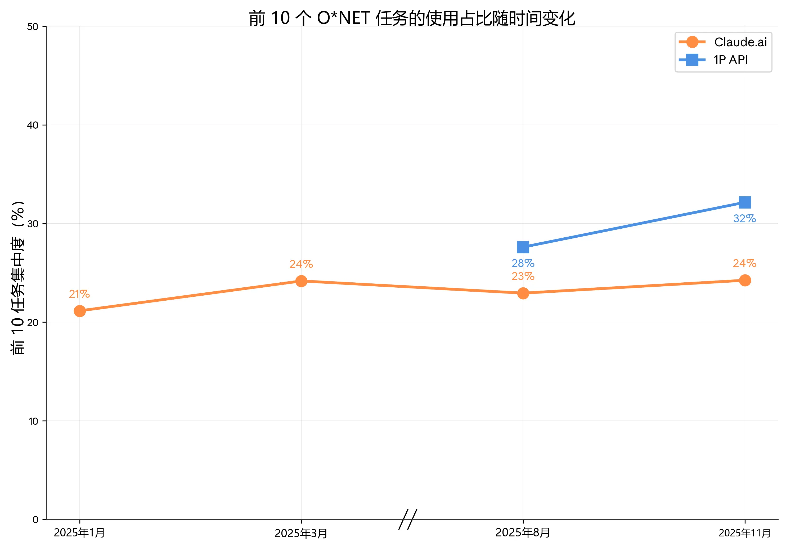
按平台和报告版本划分的被分配给十个最常见 ONET 任务的对话比例。
事实上，计算机和数学任务——如修改软件以纠正错误——继续主导 Claude 的总体使用，占 Claude.ai 对话的三分之一和 1P API 流量的近一半。这种主导地位在 Claude.ai 上已经减弱：Claude.ai 上被分配给此类（主要是编码相关）任务的对话比例从 2025 年 3 月的峰值 40% 下降到 2025 年 11 月的 34%。与此同时，1P API 流量中被分配给计算机和数学任务的记录比例从 8 月的 44% 略升至 2025 年 11 月的 46%（图 1.2）。
 图 1.2：Claude.ai 和 API 随时间的使用情况。
图 1.2：Claude.ai 和 API 随时间的使用情况。
每个面板显示 Claude.ai 上采样对话和 1P API 记录中与每个标准职业分类（SOC）大类任务相关的比例。
2025 年 11 月 Claude.ai 使用量的第二大份额是教育指导与图书馆类。这主要对应课程作业的帮助和复习，以及教学材料的开发。此类使用自我们第一份报告以来稳步上升，从 2025 年 1 月占 Claude.ai 对话的 9% 上升到 11 月的 15%。
2025 年 8 月至 11 月期间，Claude.ai 上艺术、设计、娱乐、体育和媒体任务的占比有所增加，因为越来越多的对话中 Claude 被用于写作任务，主要是文字编辑以及虚构作品的写作和润色。设计和写作相关任务占比的跃升扭转了此前几份报告中稳步下降的趋势。对于 Claude.ai 和 API 客户，Claude 被用于生命、物理和社会科学相关任务的对话/记录比例都有所下降。 对 API 客户来说，也许最值得注意的发展是与办公和行政支持相关任务的记录比例上升，从 8 月的 3 个百分点上升到 2025 年 11 月的 13%。由于 API 使用以自动化为主，这表明企业越来越多地使用 Claude 来自动化例行的后台工作流程，如电子邮件管理、文档处理、客户关系管理和日程安排。⁴
增强在 Claude.ai 上再次占主导
AI 将如何影响经济，不仅取决于 Claude 被用于哪些任务，还取决于用户访问和参与底层模型能力的方式。自我们第一份报告以来，我们将对话分为五种交互类型之一，并将其归为两大类别：自动化和增强。⁵
图 1.3 绘制了自我们一年前开始收集这些数据以来自动化和增强使用的演变。2025 年 1 月，Claude 的增强使用占主导：56% 的对话被归类为增强，而自动化为 41%。⁶ 2025 年 8 月，被归类为自动化的对话多于增强。
这是一个值得注意的发展，因为它表明模型能力和平台功能的快速改进与用户越来越将任务完全委托给 Claude 同时发生。这在「指令式」（directive）协作模式中很明显，该模式被进一步归类为自动化。指令式对话是指用户给 Claude 一个任务，Claude 以最少的来回交流完成它的对话。从 2025 年 1 月到 2025 年 8 月，此类指令式对话的比例从 27% 上升到 39%。⁷
三个月后，指令式对话的比例在 2025 年 11 月下降了 7 个百分点至 32%，因为增强在 Claude.ai 上再次比自动化更普遍。尽管如此，与近一年前我们刚开始跟踪这一指标时相比，自动化占比仍然偏高，这表明潜在趋势仍然是走向更大的自动化，尽管 8 月的峰值夸大了它实现的速度。
虽然我们看到一些证据表明 Claude.ai 上的使用向软技能使用转变，设计、管理和教育现在占比更高，但 11 月向增强使用的回归是广泛的（图 1.4）。增强使用的上升主要是由用户与 Claude 迭代完成任务（「任务迭代」）驱动的，而不是要求 Claude 解释概念（「学习」）。图 1.5 显示了与 ONET 任务中三种最常见的交互模式以及自下而上的请求分组相关的常见词汇。
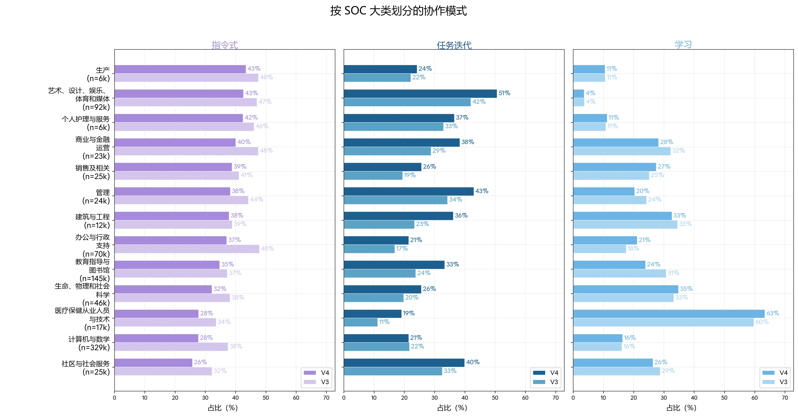 图 1.3：按平台（Claude.ai 和 1P API）划分的协作模式随时间的变化占比。
图 1.3：按平台（Claude.ai 和 1P API）划分的协作模式随时间的变化占比。
各期 Anthropic 经济指数报告中的协作模式频率。
对于每个 SOC 大类，我们从样本中至少包含 100 个观测值的 ONET 任务中，计算 Claude.ai 上与指令式、任务迭代和学习相关的对话比例。我们按记录数对观测值加权，以构建具有代表性的样本。
 图 1.5：按关键协作类型划分的 O*NET 任务标题和自下而上请求分组中的突出词汇。
图 1.5：按关键协作类型划分的 O*NET 任务标题和自下而上请求分组中的突出词汇。
从 O*NET 任务和自下而上请求组的最高四分位数中构建的词云，按至少包含 1,000 个观测值的任务/请求中被归类为指令式、任务迭代和学习的记录占比排序。指令式交互强调生产（「创建」、「开发」、「起草」）；任务迭代以细化和迭代为中心（「编辑」、「重写」、「修订」）；学习侧重于解释和知识传递（「帮助」、「解释」、「提供」）。模式在两种分类方法中一致。此分析并非基于底层记录中使用的词汇，而是基于使用隐私保护方法构建的分组。
持续的区域集中
在我们之前的报告中，我们引入了 Anthropic AI 使用指数（AUI），这是一个衡量 Claude 在给定地理区域相对于其劳动年龄人口规模被过度或不足代表的指标。AUI 的定义为 AUI 高于 1 表明一个国家使用 Claude 的强度超过了其人口规模本身所预测的，而 AUI 低于 1 表示使用量低于预期。例如，丹麦的 AUI 为 2.1，这意味着其居民使用 Claude 的频率大约是其占全球劳动年龄人口份额所暗示的两倍。 关于全球 Claude 使用的一个关键事实是它在地理上集中：少数国家构成了超常规的使用份额。从全球角度看，2025 年 8 月至 11 月之间这方面变化不大。事实上，图 1.6 的左面板显示，各国之间的 AUI 集中度在我们上一份报告和本报告之间基本没有变化。 相比之下，从 2025 年 8 月到 11 月，美国各州之间的使用变得更加均匀分布：基尼系数（衡量平等的标准指标）从 0.37 下降到 0.32。虽然在解释短期变化时需要谨慎，但这是朝着完全平等（所有州的 AUI 都等于 1，基尼系数为 0）的相对较大变化。如果美国的基尼系数继续每三个月下降 0.05，那么使用平等将在大约两年内实现。
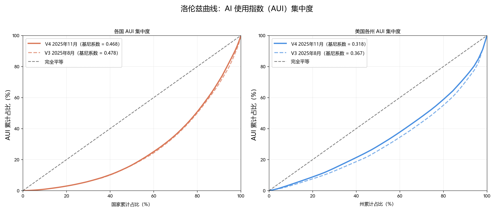
图 1.6：本报告和上一份报告中世界范围内及美国国内的 AUI 集中度。2025 年 8 月和 11 月，世界范围内及美国国内的 Anthropic AI 使用指数（AUI）的洛伦兹曲线。更接近 45 度线的曲线表示集中度更低。右侧的图显示，例如，美国前 20% 的州占美国人口调整后使用量的 40%。
是什么塑造了美国国内和世界各地的使用模式？在我们之前的报告中，我们强调了收入差异在全球的关键作用：各国之间 Claude 使用的差异在很大程度上可以用人均 GDP 的差异来解释。在第三章中，我们重新审视了收入在塑造使用强度以及世界各地使用模式方面的重要性。 在美国国内，收入作为使用预测指标不那么明确。相反，最重要的是每个州的劳动力构成，以及劳动力与反映在任务级使用中的 Claude 能力的匹配程度。计算机和数学职业工人占比更高的州——如华盛顿特区、弗吉尼亚州和华盛顿州——往往人均使用量更高。定量地说，一个州此类技术工人占比每增加 1%，人均使用量就增加 0.36%（图 1.7）。仅这一项就解释了跨州 AUI 差异的近三分之二。
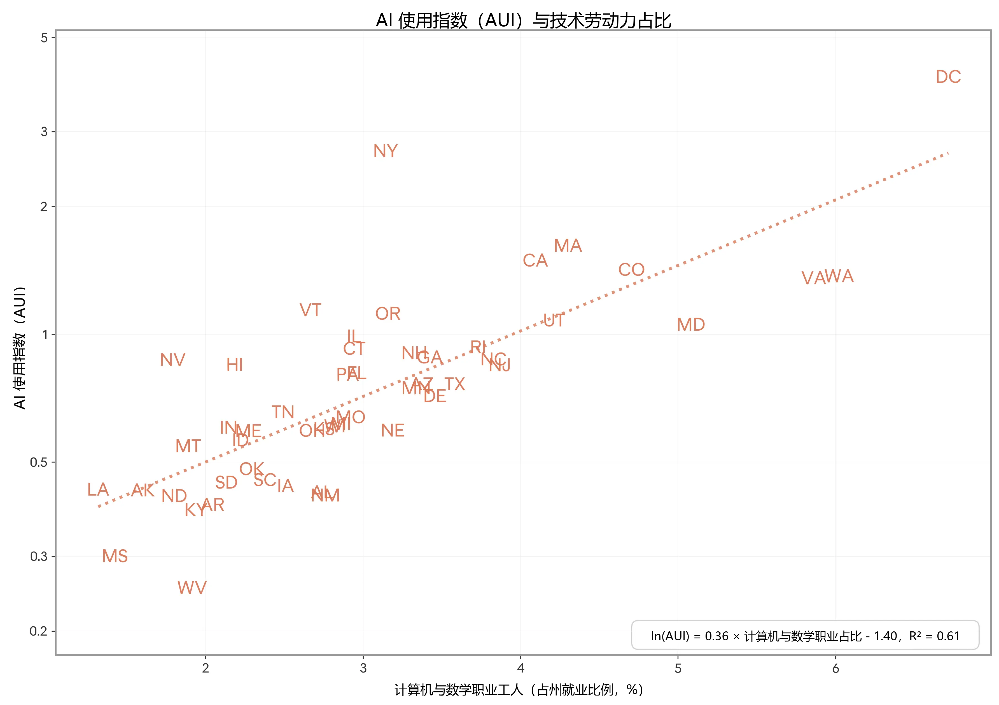
图 1.7：每个美国州的 AUI 和计算机与数学职业工人占比。此图显示，美国各州计算机与数学职业工人占比与 Anthropic AI 使用指数（AUI）高度相关。这与「总体 Claude 使用模式——以及相关能力——正在塑造美国国内区域采用模式」的观点一致。当正式计算每个州劳动力分布与按 SOC 大类划分的全球 Claude.ai 使用份额之间的 KL 散度时，这种模式更普遍地成立。 虽然我们直观地预期科技工人更多的州 Claude 使用量会更高，但这种模式更普遍地成立：在 Claude 使用相对于美国劳动力被过度代表的职业（如艺术、设计、娱乐、体育和媒体）中工人更多的州，或者在相对于国民经济 Claude 使用量低的职业（如运输和物料搬运）中工人相对较少的州，人均使用量更高。这可以通过计算每个州劳动力构成与全球 Claude 使用构成之间的 Kullback–Leibler（KL）散度来观察。KL 散度较低的州——因此其劳动力看起来更像 Claude 使用模式——往往人均使用量更高。
美国低使用州 Claude 扩散更快的迹象
虽然劳动力构成的差异似乎在塑造美国国内区域采用方面发挥作用，但早期证据表明 Claude 的扩散速度大大超过历史先例的预测。经济上有重要影响的技术历史上花了大约半个世纪才在美国实现全面扩散（Kalanyi 等，2025）。相比之下，比较 2025 年 11 月与三个月前的 Claude 采用率，我们估计美国各州人均采用率（以 AUI 衡量）的平等可能在 2-5 年内实现。这一估计具有高度的不确定性，因为我们估计的精度无法排除更慢的扩散速度。
我们通过一个简单的扩散模型视角生成这一估计，这里简要描述。我们将扩散建模为向一个共同稳态（所有人均使用量相等，每个州 s 的 AUI 等于 1）的比例收敛：
在此模型下，AUI 相对于稳态（AUI = 1）的对数偏差每三个月缩小 β 倍，意味着半衰期为 ln(.5)/ln( β ) 个季度。例如，使用季度数据，β = 0.99 意味着约 17 年的半衰期。举例说明，从初始 AUI 2 开始，这意味着 17 年后 AUI 将下降到约 1.4，50 年后下降到约 1.1。我们取 β = 0.99 作为合理的基准，因为它意味着与 20 世纪经济上有重要影响的技术类似的扩散速度。
这种收敛模型激发了以下回归设定⁸：
用普通最小二乘法（OLS）朴素估计该方程得到 β̂ ≈ 0.77。用每个州的劳动力加权的加权最小二乘法（WLS）得到 β̂ ≈ 0.76（图 1.8）。两者在常规显著性水平上都与 1 在统计上可区分。从表面价值看，这些估计意味着只需两年多一点的时间，每个州的 AUI 就能弥合与 1 的大部分差距。
 图 1.8：美国各州的 Anthropic AI 使用指数（AUI），2025 年 8 月（V3）和 2025 年 11 月（V4）。
图 1.8：美国各州的 Anthropic AI 使用指数（AUI），2025 年 8 月（V3）和 2025 年 11 月（V4）。
通过比较 2025 年 11 月的 AUI 与 2025 年 8 月的值，我们可以估计美国国内 Claude 使用隐含的扩散速度。在一个所有美国州 AUI = 1 的稳态比例收敛模型下，估计的弹性可用于计算扩散速度（更多细节见正文）。我们的估计范围意味着 AUI 区域趋同的速度为 2-5 年。
以这种方式估计收敛的一个担忧是，我们的 AUI 估计受采样噪声和与扩散无关的其他变化的影响。这会产生经典的衰减偏误：即使 AUI 实际上没有变化，我们对 β 的估计最终也可能显著低于 1。
为解决这个问题，我们用两阶段最小二乘法（2SLS）估计模型，以每个州劳动力构成（以其与总体 Claude 使用模式的接近程度衡量）作为 2025 年 8 月 AUI 对数的工具变量。这个工具背后的逻辑是，劳动力构成是 Claude 使用的强预测因子（相关性），但由于是独立测量的，预计与 AUI 估计中的采样噪声不相关（有效性）。如上所述，在高 Claude 使用角色中工人更多的州确实往往人均使用量系统性更高。
2SLS 估计意味着略慢的收敛：不加权时 β̂ ≈ 0.89，按每个州劳动年龄人口加权时 β̂ ≈ 0.86。然而，这些估计精度较低，只有前者在 10% 水平上与 1 在统计上可区分。尽管意味着比 OLS 更慢的收敛，2SLS 估计仍然意味着快速的扩散：每个州 AUI 的对数偏差只需四到五年就能缩小 90%。
话虽如此，我们的估计仅基于三个月的数据。虽然 2SLS 设定可能有助于解决采样噪声问题，但仍存在相当大的不确定性。我们将在未来的报告中重新审视扩散速度的问题。
¹ 与之前的报告一样，我们所有的分析都基于隐私保护分析。在整个报告中，我们分析从 Claude.ai Free、Pro 和 Max 对话中随机抽取的 100 万次对话样本（我们也称之为「消费者数据」，因为它主要代表消费者使用）和来自我们第一方（1P）API 流量的 100 万条记录（我们也称之为「企业数据」，因为它主要代表企业使用）。两个样本都来自 2025 年 11 月 13 日至 2025 年 11 月 20 日。我们继续按照我们的隐私和保留政策管理数据，我们的分析符合我们的条款、政策和合同协议。对于 1P API 数据，每条记录是我们样本期内的一对提示-回答，在某些情况下是多轮交互的会话中间部分。 ² Claude.ai 上既未被归类为自动化也未被归类为增强的对话比例从 3.9% 下降到 3.0%。 ³ 参见，例如，Kalanyi 等（2025）：「其次，随着技术成熟和相关工作岗位数量增长，招聘在地理上扩散。这个过程非常缓慢，大约需要 50 年才能完全分散。」 ⁴ 通过我们对 1P API 流量的自下而上分析，我们看到 Claude 被用于「生成个性化的 B2B 冷销售邮件」（0.47%）、「分析电子邮件并为商务信函起草回复」（0.28%）、「构建和维护发票处理系统」（0.24%）、「将电子邮件分类到预定义标签」（0.23%）和「管理日历安排、会议协调和预约预订」（0.16%）。 ⁵ 在高层次上，我们区分使用 Claude 的自动化和增强模式。自动化包括以任务完成为中心的交互模式：指令式：用户给 Claude 一个任务，Claude 以最少的来回交流完成它；反馈循环：用户自动化任务并根据需要向 Claude 提供反馈；增强侧重于协作交互模式：学习：用户向 Claude 询问各种主题的信息或解释；任务迭代：用户与 Claude 协作迭代任务；验证：用户就自己的工作向 Claude 征求反馈 _。 ⁶ 这些交互模式并非互斥穷尽。在某些情况下，Claude 确定采样的对话与五种交互模式中的任何一种都不匹配。 ⁷ 在本报告中，我们使用 Sonnet 4.5 进行分类，而在我们之前的经济指数报告中我们使用 Sonnet 4。我们之前发现不同的模型可以产生不同的分类结果，尽管这些影响往往不大。 ⁸ 我们在回归中包含一个常数项，因为在零假设下它应该等于零。在我们所有的设定中，常数项的估计都接近零且在统计上无法与零区分。
第二章：引入经济原语
Anthropic 经济指数的力量在于不仅显示 AI 被使用了多少，还显示它_如何_被使用。在之前的报告中，我们展示了 Claude 被用于哪些任务，以及人们如何与 Claude 协作。这些数据使外部研究人员能够分析劳动力市场的变化（例如，Brynjolfsson, Chandar & Chen, 2025）。 在本版 Anthropic 经济指数中，我们通过提供五个经济「原语」的洞察来扩大可供外部研究人员使用的数据广度。我们所说的原语是指衡量 Claude 使用方式的简单、基础性指标，我们通过让 Claude 回答关于我们样本中匿名化记录的具体问题来生成。我们的一些原语包含几个这样的问题，另一些则使用单一指标。 由于 AI 能力进步如此之快，且经济效应将不均匀地呈现，我们需要广泛的信号来不仅揭示 Claude 如何被使用，还要为这项技术将产生什么影响提供信息。
对经济影响重要的 AI 使用维度
本报告在我们已经衡量的协作模式（用户使用 Claude 是自动化还是增强其任务）之外，引入了五个新的经济原语。这些原语捕捉人机对话的五个维度：1）任务复杂度，2）人类和 AI 的技能，3）工作、课程作业或个人用例，4）AI 的自主程度，以及 5）任务成功率（见表 2.1）。AI 自主性捕捉的东西与我们现有的自动化/增强区分不同。例如，「把这段话翻译成法语」是高自动化（指令式，最少的来回交流）但低 AI 自主性（该任务几乎不需要 Claude 做决策）。
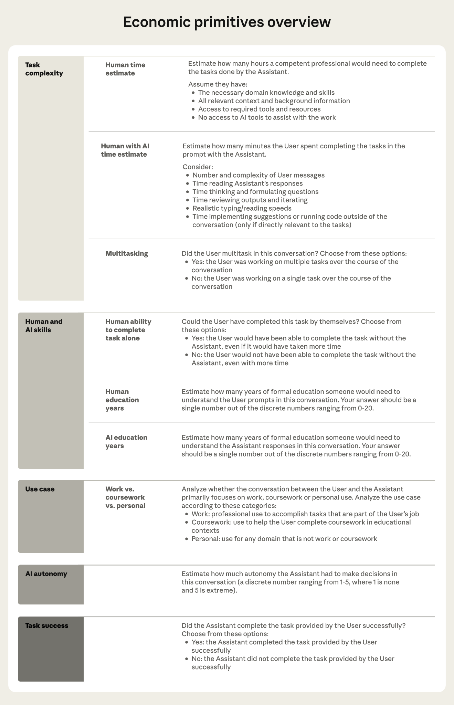
表 2.1：本报告新增的经济原语。该表显示了本报告在之前报告中的协作模式（自动化/增强）之外新增的经济原语。第一列显示原语类别，第二列显示原语名称，第三列显示原语的操作化方式，即提供给 Claude 的提示，我们使用分类器将对话映射到原语。完整提示文本见在线附录 https://huggingface.co/datasets/Anthropic/EconomicIndex。 任务复杂度捕捉任务可能在复杂度上有所不同，包括完成它们需要多长时间以及它们有多困难。ONET 中的「调试」任务可能指 Claude 修复函数中的一个小错误，也可能指全面重构代码库——对劳动力需求的影响截然不同。我们通过估计在没有 AI 的情况下人类完成任务的时间、使用 AI 完成任务的耗时，以及用户是否在单个对话中处理多个任务来衡量复杂度。 人类和 AI 的技能解决自动化如何与技能水平交互的问题。如果 AI 不成比例地替代需要较少专业技能的任务，同时补充高技能工作，它可能是另一种形式的技能偏向型技术变革——增加对高技能工人的需求，同时取代低技能工人。我们衡量用户是否可以在没有 Claude 的情况下完成任务，以及理解用户提示和 Claude 回答所需的受教育年限。 用例区分专业、教育和个人用途。劳动力市场效应最直接地源自工作场所的使用，而教育使用可能标志着未来劳动力在哪里构建 AI 互补技能。 AI 自主性衡量用户将决策委托给 Claude 的程度。我们最新的报告记录了「指令式」使用的上升，用户完全委托任务。跟踪自主性水平——从积极协作到完全委托——有助于预测自动化的速度。 任务成功率*衡量 Claude 对其是否成功完成任务的评估。任务成功率有助于评估任务是否可以被有效自动化（任务到底能否被自动化？）和高效地自动化（自动化一个任务需要多少次尝试？）。也就是说，任务成功率对自动化劳动任务的可行性和成本都很重要。
选择并验证新指标
我们数据中捕捉的 AI 使用新维度，参考了我们最近关于 Claude 生产力效应的工作、外部研究人员的反馈、近期从人力资本和专业知识视角研究 AI 经济影响的文献（Vendraminell 等，2025），以及我们经济研究团队内部的讨论。我们的主要选择标准是预期的经济相关性、维度的互补性，以及 Claude 是否能沿该维度以方向准确性对对话进行分类。 我们提出，多个简单的原语，即使本身有些噪声且并非完美准确，合在一起也能就 AI 的使用方式提供重要信号。因此我们主要测试了方向准确性。 对于使用和不使用 AI 的任务时长分类，我们使用了之前生产力工作中最小化修改的版本。对于通过我们的隐私保护工具实现的全新分类器¹，我们的验证过程如下。我们设计了多个潜在指标来捕捉任务复杂度等概念。对于 Claude.ai，我们在一个小型记录集上评估分类器与人类研究人员的性能比较，这些记录是用户向 Claude.ai 提供反馈的记录，因此我们有权限查看底层记录。对于第一方 API（1P API）数据，我们使用内部和合成数据的混合来验证分类器。这两种数据源都不能完全代表 Claude.ai 或 1P API 流量，但它们使我们能够检查分类器是否在类似于真实使用数据的数据上正常工作，同时确保隐私。 基于初步性能，我们修改了需要调整的分类器，或丢弃了表现不佳的分类器。有趣的是，我们发现在某些情况下（例如衡量任务成功率），与人类评分相比，简单的分类器比细致复杂的分类器表现更好。然后我们比较了有和没有思维链提示的分类器版本的性能，并决定只在三个维度（人类时间估计、人类与 AI 时间估计和 AI 自主性）上保留思维链提示，因为我们发现它在那三个维度上大幅提高了性能。我们为五个原语选择了一组最终的九个新分类器，所有这些分类器都具有方向准确性，即使它们可能与人类评分有些偏差。
原语的价值在于它们能预测什么
我们的目标是创建易于实施、组合起来能提供潜在重要经济信号的分类器。虽然我们对新指标的方向准确性非常有信心（例如，理解人类提示所需的平均受教育年限更高的任务可能更复杂），但没有任何一个指标应被视为精确或确定性的（例如，Claude.ai 可能有些低估许多任务所需的人类教育年限）。 即便如此，这些原语丰富了我们对人们如何使用 AI 的理解。在原语、地区和任务之间出现了系统性的关系——我们在第三章和第四章中深入探讨这些模式。这些关系直观且一致，表明原语捕捉了人们和企业使用 Claude 的相关方面。 外部基准强化了这一点。在我们的生产力工作中，Claude 的时间估计与软件工程任务上实际花费的时间相关。图 2.1 显示，我们的人类教育指标与跨职业的实际工人受教育水平相关。这些验证表明单个原语在方向上是正确的——而将它们组合起来可能提供额外的分析价值，例如用任务成功率丰富生产力估计，或构建职业暴露的新指标。
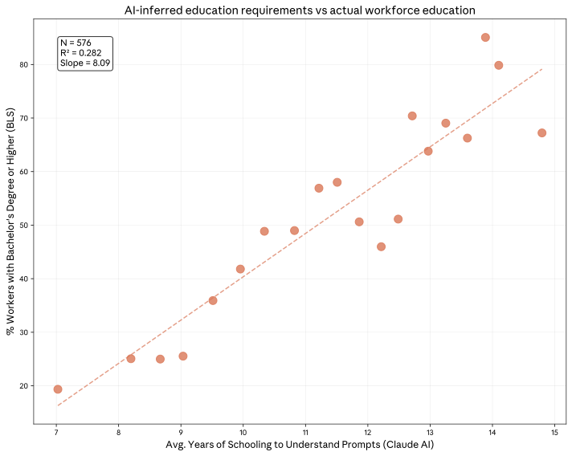
图 2.1：理解人类提示所需的教育年限与至少拥有学士学位的工人比例。教育数据来自「按详细职业划分的 25 岁及以上工人的受教育程度」（BLS），基于 2022 年和 2023 年美国社区调查²的微观数据。我们计算与特定职业相关的任务的平均受教育年限。然后我们计算该职业中拥有学士学位或更高学位的工人百分比。 最终，最强的验证将来自原语捕捉劳动力市场结果中有意义变化的能力。我们发布的数据使外部研究人员能够以新的方式分析经济变化。早期工作令人鼓舞——之前报告中的自动化/增强区分已经被外部研究人员用于分析劳动力市场变化（Brynjolfsson, Chandar & Chen, 2025）。
原语突出显示用例的差异
为了说明原语如何区分不同类型的 AI 使用，我们检查两个对比鲜明的请求簇：软件开发（「帮助跨多个编程领域调试、开发和优化软件」）和个人生活管理（「协助个人生活管理和日常任务」）。图 2.2 显示了每个簇的原语画像以及全球平均值。
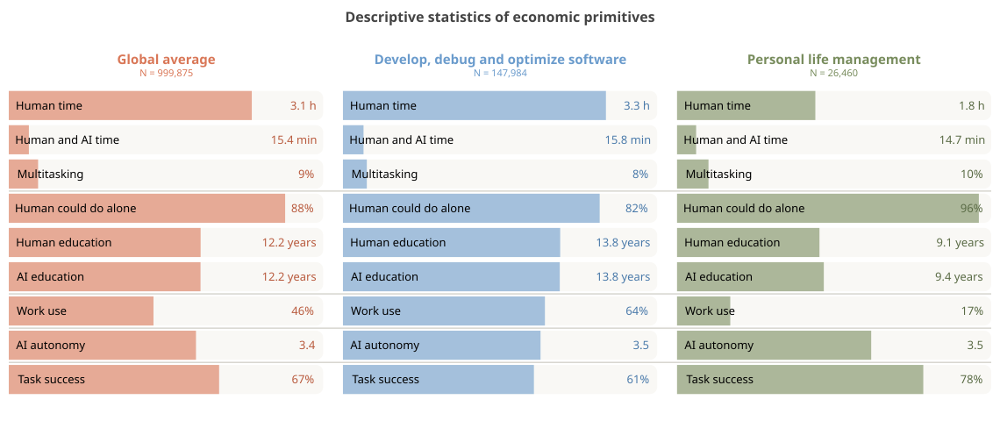
图 2.2：经济原语的描述性统计（总体和两个示例请求簇）。对于此图，我们聚焦于整个 Claude.ai 样本以及最细粒度级别的两个请求簇的原语描述性统计。N 表示对话的总数或属于请求簇的对话数。
任务复杂度。 Claude 估计软件开发请求需要一名能干的专业人员在没有 AI 的情况下大约 3.3 小时完成——接近 3.1 小时的全球平均水平。个人生活管理任务被估计更简单，平均 1.8 小时。估计的人类-AI 协作时间在这两者之间相似（约 15 分钟），显示对于这两个任务，该原语的变化小于其他原语。 人类和 AI 的技能。 软件开发请求利用更专业的知识：人类提示和 AI 回答都被估计需要约 13.8 年的教育才能理解，而个人生活管理请求为 9.1–9.4 年。Claude 估计用户在 96% 的情况下能够自己完成个人生活管理请求，而软件开发请求为 82%——表明 Claude 为技术工作提供了更关键的支持。 用例。 Claude 将 64% 的软件开发请求归类为与工作相关，而个人生活管理只有 17%。这说明 Claude 可以用于非常不同的目的。总体而言，Claude.ai 的使用是 46% 工作、19% 课程作业和 35% 个人。 AI 自主性。 两个簇都显示出相似的估计自主性水平（1 到 5 评分标准上约 3.5），接近全球平均水平。这意味着软件开发和个人生活管理任务平均都赋予 Claude 相似的自主决策权来决定如何完成任务。 任务成功率。 Claude 评估个人任务成功完成的时间占 78%，而软件开发为 61%。更困难的任务——需要更专业知识且用户无法轻松独立完成的任务——显示出较低的估计成功率。
Claude.ai 和 API 用户的任务与原语不同
与之前的报告一样，我们发现 Claude.ai 对话与 1P API 数据中的任务和原语存在重大差异。部分原因在于交互的性质：Claude.ai 记录可以包含多轮对话，而我们分析的 API 数据仅限于单个输入-输出对。这是因为 API 请求是独立到达的，没有将它们与先前交换相关联的元数据。这意味着我们只能将它们作为孤立的用户-助手对来分析，而不是完整的对话轨迹。 总体而言，API 使用压倒性地与工作相关（74% 对 46%）且是指令式的（64% 对 32%），四分之三的交互被归类为自动化，而 Claude.ai 上不到一半（见图 1.3）。 相比之下，Claude.ai 用户参与更多的来回交流：任务迭代和学习模式要常见得多，任务往往更长——无论是人类与 AI 共处的时间（15 分钟对 5 分钟），还是人类单独完成任务所需的估计时间（3.1 小时对 1.7 小时）。Claude.ai 还显示更高的任务成功率（67% 对 49%），这可能反映了多轮对话的好处，用户可以澄清、纠正方向并迭代到解决方案。Claude.ai 用户平均也给予 AI 更多的自主权，并且更可能带来他们无法独自完成的任务。 这些差异也反映在任务的职业分布中。API 使用高度集中在计算机与数学任务（52% 对 36%），与其用于适合程序化、自动化友好型工作流程（如代码生成和数据处理）一致。办公与行政任务在 API 中也更普遍（15% 对 8%），反映了适合委托的例行业务运营。相比之下，Claude.ai 看到显著更多的教育指导任务（16% 对 4%）——课程作业帮助、辅导和教学材料开发——以及更多的艺术、设计和娱乐任务（11% 对 6%）。Claude.ai 还有更长的面向人类的类别尾部，如社区与社会服务和医疗保健从业人员，用户在其中寻求建议、咨询或个人事务的信息。 这些模式表明，1P API 部署集中在适合系统性自动化的任务上，而 Claude.ai 服务于更广泛的用例，包括学习、创造性工作和个人辅助。 第四章更深入地探讨任务级变化。 ¹ 分类器是一种将给定输入（例如用户对话）分配给特定输出（例如用例「工作」）的模型。在本报告中，我们使用 Claude 作为分类器，这意味着我们提示 Claude 选择特定输出，然后使用 Claude 的回答作为输出（提示见表 2.1）。 ² 在本报告中，我们使用分箱散点图来显示双变量关系。我们根据 x 变量将观测值分成 20 个等大小的箱，然后绘制每个箱的平均 x 和 y 值。例如，最左边的点代表 x 分布最低 5% 观测值的平均值。
第三章：Claude 的使用方式如何随地域变化
概述
在本章中，我们使用对 100 万次 Claude.ai 对话²的隐私保护¹分析，分析 Claude 使用模式的地理差异。我们做出五项观察： * Claude 主要用于工作，但用例随采用而多样化：工作和个人用例在高收入国家更常见，而课程作业用例在低收入国家更常见。这呼应了我们之前报告中的发现，并与微软最近的工作一致。 * GDP 和人类教育在全球和美国国内都能预测采用：在国家层面，人均 GDP 每增加 1% 与人均 Claude 使用量增加 0.7% 相关。人类教育——Claude 对理解人类提示所需的正式教育年限的估计——在两个层面上都与 Anthropic AI 使用指数正相关。 * 其他原语在全球与美国层面预测采用的方式不同：在国家层面，较高的使用量与较短的任务和较少的 AI 自主性相关。在美国州层面，这些关系在统计上不显著，尽管工作用途与采用正相关。 * 原语之间的关系取决于语境：任务成功率与人类教育在各国之间负相关，但在美国各州内正相关。然而，当控制其他原语时，美国的关系变得不显著。 * 人类如何提示，Claude 就如何回应：人类提示和 AI 回答的受教育水平几乎完全相关（两个层面 r > 0.92）。人均使用量较高的国家也显示出更多的增强——将 Claude 用作协作者而不是完全委托决策。
Claude 主要用于工作，但用例随采用而多样化
我们的数据基于对 100 万次 Claude.ai 对话²的隐私保护¹分析，揭示了 Claude 采用方式惊人的地理差异。Claude 在全球各地和美国各地都主要用于工作。然而，用例存在地理差异。在全球层面，巴尔干地区和巴西的工作用途相对份额最高（见图 3.1），印度尼西亚以最高的课程作业份额脱颖而出。在美国州层面，纽约州是相对最多将 Claude 用于工作的州。
 图 3.1：全球 Claude.ai 工作用途的份额。
图 3.1：全球 Claude.ai 工作用途的份额。
给定国家被归类为工作（相对于个人或课程作业）的对话份额。不同的层级反映了一个国家在第一章 345 中定义的 Anthropic AI 使用指数全球分布中的位置。对于此图，我们只纳入样本中至少包含 200 个观测值的国家，因为我们随机样本中低使用国家的测量存在不确定性。底层数据包括 Claude.ai Free、Pro 和 Max 使用。
用例差异与一个国家的 人均收入相关，而人均收入又与人均 AI 采用相关。我们观察到 Claude 的工作用例和个人用例在高收入国家更常见，而课程作业用例在低收入国家更常见（见图 3.2）。有趣的是，这些发现与微软最近的工作趋同，该工作显示用于学校的 AI 与较低的人均收入相关，而用于休闲的 AI 与较高的人均收入相关。
 图 3.2：人均收入预测 Claude 在各国之间的使用方式。
图 3.2：人均收入预测 Claude 在各国之间的使用方式。
每个图显示 Claude.ai 对话的特定用例（工作、课程作业或个人）份额与对数人均 GDP 之间的双变量关系。标签显示 ISO-3166-1 国家代码。对于此图，我们只纳入样本中至少包含 200 个观测值的国家，因为我们随机样本中低使用国家的测量存在不确定性。底层数据包括 Claude.ai Free、Pro 和 Max 使用。
多种因素可能导致这些模式：
* 随着 AI 采用率提高和更多样化的用户使用 AI，或者现有用户探索 AI 更广泛的应用，个人用例可能更常见。相比之下，人均采用率较低的国家（与较低的人均收入相关）可能专注于特定用例，如编码或课程作业。
* 各国的 Claude 支付能力不同，课程作业用例可能比软件工程等工作领域的复杂用例更适合免费的 Claude 使用。
* 高收入国家的用户可能拥有其他资源，如空闲时间和持续的网络接入，这些资源使非必要的个人用例成为可能。
国际和美国采用在经济原语上有所不同
本报告引入的经济原语使我们能够分析可能驱动差异化采用的一些因素。在分析 Anthropic AI 使用指数（AUI）与核心经济原语以及 GDP 之间的关系时，我们观察到某些模式对国家和美国各州都成立。例如，我们复制了之前报告中的发现，即 GDP 与 AUI 强相关（见图 3.3 和 3.4）。在国家层面，人均 GDP 每增加 1% 与人均 Claude 使用量增加 0.7% 相关。人类教育（理解对话中人类撰写的提示需要多少年教育）在国家层面和美国州层面都与 Anthropic AI 使用指数显著正相关。
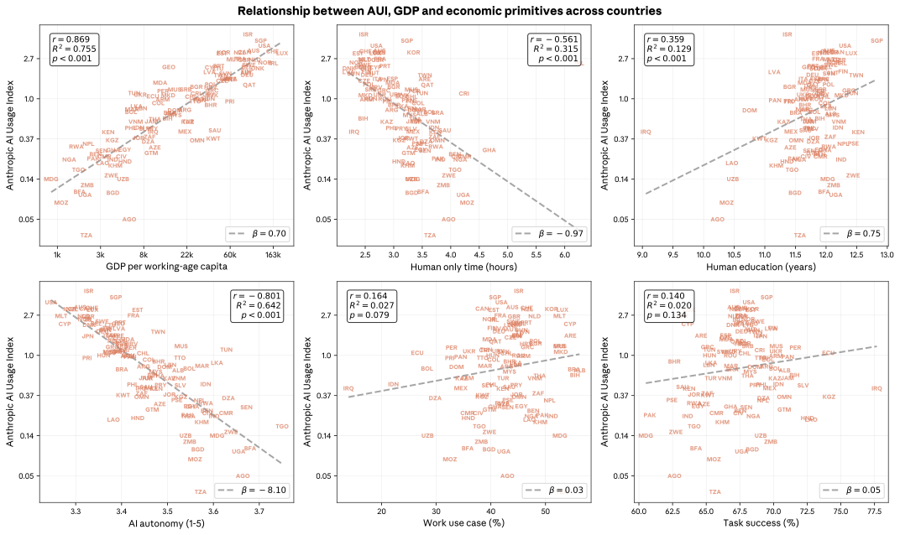
图 3.3：国家层面 Anthropic AI 使用指数与五个核心经济原语和人均 GDP 之间的关系。每个图显示 Anthropic AI 使用指数自然对数与核心经济原语以及对数人均 GDP 之间的双变量关系。标签显示 ISO-3166-1 国家代码。对于此图，我们只纳入样本中至少包含 200 个观测值的国家，因为我们随机样本中低使用国家的测量存在不确定性。底层数据包括 Claude.ai Free、Pro 和 Max 使用。人类单独时间、人类教育、AI 自主性、工作用例和任务成功率的详细定义见第二章。
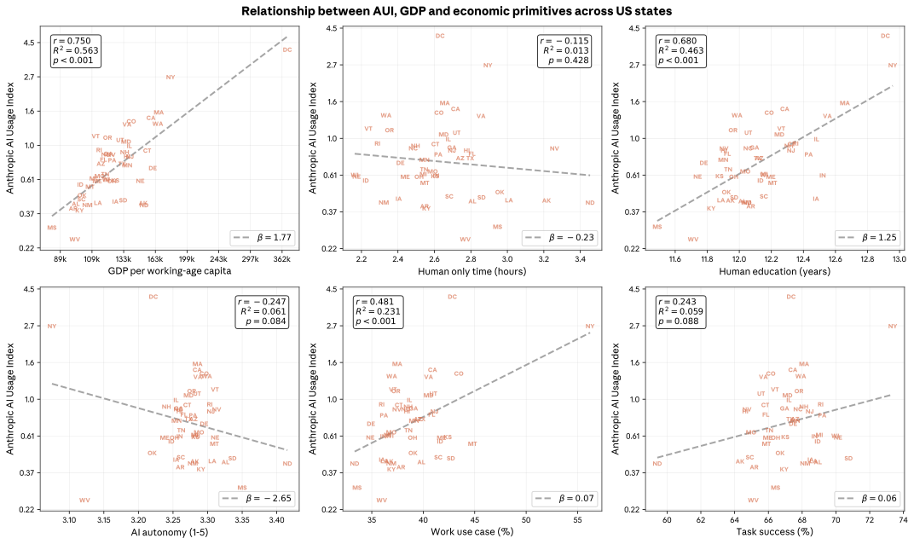
图 3.4：美国州层面 Anthropic AI 使用指数与五个核心经济原语和人均 GDP 之间的关系。每个图显示 Anthropic AI 使用指数自然对数与核心经济原语以及对数人均 GDP 之间的双变量关系。标签显示 ISO-3166-2 地区代码⁶。对于此图，我们只纳入样本中至少包含 100 个观测值的州，因为我们随机样本中低使用州的测量存在不确定性。底层数据包括 Claude.ai Free、Pro 和 Max 使用。人类单独时间、人类教育、AI 自主性、工作用例和任务成功率的详细定义见第二章。 然而，AUI 与原语之间的关系往往在国家层面和美国州层面不同。例如，在国家层面，AUI 与人类在没有 AI 的情况下完成任务所需的时间以及给予 AI 的决策自主程度负相关。在美国州层面，这些关系在统计上不显著——可能也是因为美国州的样本量较小。此外，我们在美国州层面观察到 AUI 与 Claude.ai 工作用途之间的正相关，但在国家层面则没有。 重要的是，原语本身不一定是因果因素——我们不知道是收入或教育真正驱动采用，还是它们是其他潜在条件的代理。这些因素中的许多彼此高度相关。例如，在美国州层面，人类教育年限与 Anthropic AI 使用指数单独存在强关联，但一旦我们控制 GDP 和其他原语，这种关系就消失了——表明教育可能捕捉了能更好地用经济发展和其他因素解释的变化。
制度因素塑造任务成功率与教育年限之间的关系
经济和制度背景——例如教育水平在一个地理区域内如何变化——与 AI 的使用方式相关。有趣的是，我们观察到任务成功率与国家层面的人类教育负相关，但在美国州层面正相关。然而，州层面的正相关在控制其他原语后变得不显著（见图 3.5）。这意味着一个观察层面（国家）的关系模式与另一个层面（美国州）的关系模式相矛盾。在跨国层面，受教育程度高的人口可能尝试更困难的任务，因此成功率较低。在同质语境中，教育可能不会提高任务成功率。
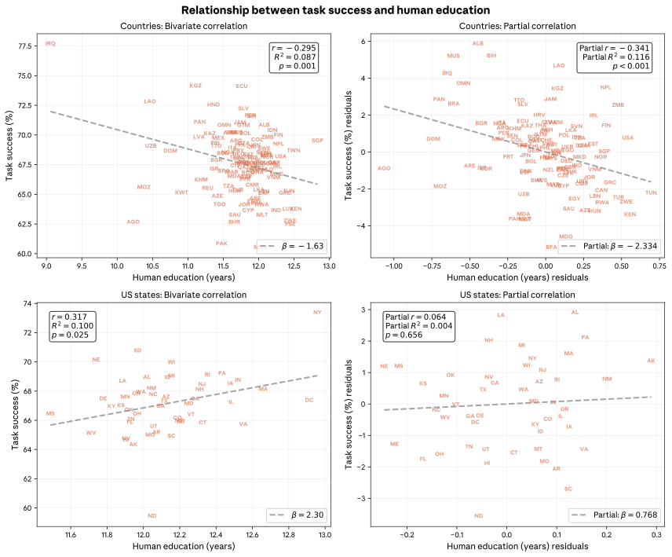
图 3.5：任务成功率与人类教育之间的关系。左侧的图显示任务成功率与理解对话中人类提示所需教育年限之间的双变量相关性。右侧的图显示偏回归，其中我们额外控制了人均 GDP、AI 自主性、自动化百分比、工作和课程作业用例的份额、人类无 AI 时间、人类有 AI 时间、多任务处理和人类能力（这些变量的详细定义见第二章）。标签显示 ISO-3166-1 国家代码和 ISO-3166-2 地区代码。对于此图，我们只纳入样本中至少包含 200 个观测值的国家和至少 100 个观测值的州，因为我们随机样本中低使用州的测量存在不确定性。底层数据包括 Claude.ai Free、Pro 和 Max 使用。
人类如何提示，Claude 就如何回应
我们发现人类和 AI 教育之间存在非常高的相关性，即理解人类提示或 AI 回答所需的受教育年限（国家：r = 0.925，p < 0.001，N = 117；美国各州：r = 0.928，p < 0.001，N = 50）。这凸显了技能的重要性，并表明人类如何提示 AI 决定了它可能有多有效。这也凸显了模型设计和训练的重要性。虽然 Claude 能够以高度复杂的方式回应，但它往往只有在用户输入复杂提示时才会这样做。 模型的训练、微调和指示方式会影响它们如何回应用户。例如，一个 AI 模型可能有一个系统提示，指示它始终使用中学生都能理解的简单语言，而另一个 AI 模型可能只用需要博士教育才能理解的复杂语言回答。对于 Claude，我们观察到一种更动态的模式，用户如何提示 Claude 与 Claude 如何回应相关。
更高的收入和更多的使用与更多的增强相关
人均使用量较高的国家（往往是人均收入较高的国家）显示出较低的自动化，以及委托给 Claude 的决策自主权较少。也就是说，高收入国家更多地将 AI 用作助手和协作者，而不是让它独立工作。这种关系在美国州层面不显著，也许是因为美国内部的收入变化和用例多样性比全球更有限。这反映了我们第三份经济指数报告中的一个发现：Anthropic AI 使用指数较高的国家往往以更协作的方式（增强）使用 Claude，而不是让它独立运作（自动化）。
结论
我们数据中惊人的地理差异表明，Claude 在世界各地以不同的方式被使用。GDP 在国家层面和美国州层面都能预测 Anthropic AI 使用指数，而人类教育——用户提示的复杂程度——在两个层面上也与采用相关。 其他关系取决于语境。在国家层面，较高的使用量与较短的任务和较少的 AI 自主性相关；在美国国内，这些模式不成立。任务成功率与人类教育在全球层面与美国国内表现出相反的关系。 人类和 AI 教育年限之间近乎完美的相关性强调，用户如何提示 Claude 塑造了它如何回应。结合高使用量国家更协作地使用 Claude 的发现，这表明善于使用 AI 所需的技能本身可能分布不均。 通过衡量与 Claude 对话的特征，我们发现了与人力资本等更广泛经济因素的重要关系。这些关系可能有助于预测劳动力市场结果，并为顺利过渡到需要不同技能组合的 AI 赋能经济提供信息。
¹ 出于隐私原因，我们的自动化分析系统会过滤掉任何单元——例如国家以及（国家，任务）交叉——中对话少于 15 次且唯一用户账户少于 5 个的单元。对于自下而上的请求簇，我们有更高的隐私过滤标准：至少 500 次对话和 250 个唯一账户。 ² 本节数据涵盖 2025 年 11 月 13 日至 20 日的 100 万次 Claude.ai Free、Pro 和 Max 对话，从该时期所有对话中随机抽样。然后我们排除了被标记为潜在信任和安全违规的内容。观察单位是与 Claude 在 Claude.ai 上的一次对话，而不是用户，因此同一用户的多次对话可能被包含在内，尽管我们过去的工作表明随机抽样与按用户分层抽样不会产生实质不同的结果。国家和美国州层面的汇总地理统计数据是从每次对话的 IP 地址评估和制表的。对于地理定位，我们使用 ISO-3166 代码，因为我们的 IP 地理定位提供商使用这一标准。国际位置使用 ISO-3166-1 国家代码，美国州级数据使用 ISO-3166-2 地区代码，其中包括所有 50 个美国州和华盛顿特区。我们排除来自 VPN、任播或托管服务的对话，这是由我们的 IP 地理定位提供商确定的。 ³ 世界地图基于 Natural Earth 的世界地图，采用 ISO 标准对有争议领土的观点，这意味着地图可能不包含一些有争议的领土。我们注意到，除了以灰色显示的（「Claude 不可用」）国家外，我们不在乌克兰的克里米亚、顿涅茨克、赫尔松、卢甘斯克和扎波罗热地区运营。根据国际制裁和我们支持乌克兰领土完整的承诺，我们的服务在俄罗斯占领的地区不可用。 ⁴ 「无数据」适用于数据部分缺失的国家。一些领土（例如西撒哈拉、法属圭亚那）有自己的 ISO-3611 代码。其中一些有一些使用量，另一些则没有。由于 Anthropic AI 使用指数是根据世界银行的劳动年龄人口数据按劳动年龄人口计算的，而并非所有这些领土的人口数据都容易获得，我们无法计算这些领土的 AUI。 ⁵ 我们将塞舌尔排除在所有地理分析之外，因为我们在采样日期期间看到的大部分使用量是滥用流量。 ⁶ 我们将怀俄明州排除在所有美国州分析之外，因为我们在采样日期期间看到的大部分使用量是滥用流量。
第四章：任务与生产力
在本章中，我们研究时间节省、成功率和自主性如何因任务类型而异，以及这对工作和生产力的潜在影响意味着什么。 模式表明，更复杂的任务带来更大的时间节省，但这是以可靠性为代价的。在一个受 Autor and Thompson (2025) 启发、简单的任务移除练习中，Claude 覆盖高教育任务的倾向在大多数职业中产生净技能降级效应，因为 AI 处理的任务往往是工作中技能更高的组成部分。 Claude 使用涵盖了越来越多的职业中的可观比例的任务。我们将成功率纳入更丰富的职业覆盖模型中；一些覆盖度适中的职业看到了大效应，因为 AI 在其最耗时的任务上成功。用任务可靠性调整生产力估计，将隐含收益大致减半，从未来十年年劳动生产率增长 1.8 个百分点降至约 1.0 个百分点。然而，这些估计反映了当前的模型能力，而且所有迹象都表明，在日益长时间任务上的可靠性将会提高。
任务加速中的权衡
我们的估计表明，一般来说，我们数据中更复杂的任务从 AI 中产生更大的时间节省（或「加速」）。我们通过让 Claude 同时估计人类单独完成任务需要多长时间以及人类和 AI 协作时的时长来得出这一点，我们在之前的工作中验证了这一点。加速就是人类单独时间除以人类与 AI 协作时间。因此，将 1 小时的任务缩短到 10 分钟会带来 6 倍的加速。
下面的图 4.1 左面板给出了平均加速与我们核心任务复杂度指标（理解输入所需的人类受教育年限，全部在 ONET 任务级别¹）的对比。它显示，在 Claude.ai 对话中，例如，需要 12 年教育（高中教育）的提示享受 9 倍加速，而需要 16 年教育（大学学位）的提示达到 12 倍加速。这意味着生产力收益在需要更高人力资本的用例中更为显著，这与白领工人更可能采用 AI 的证据一致（例如，Bick 等 2025）。
在整个任务复杂度范围内，API 用户的加速更高。这可能反映了 API 数据的性质，它仅限于单轮交互，而且 API 任务已被特别选择用于自动化。
 图 4.1：加速（面板 a）和成功率（面板 b）与人类受教育年限的关系。
图 4.1：加速（面板 a）和成功率（面板 b）与人类受教育年限的关系。
左面板显示加速与人类受教育年限之间双变量关系的分箱散点图，全部在 ONET 任务级别测量并按平台拆分。虚线显示线性回归的拟合。右面板显示 y 轴为成功率的相同关系。
然而，结果也捕捉到一种权衡。更复杂的任务任务成功率更低，如右面板所示。例如，在 Claude.ai 上，需要低于高中教育的任务（例如回答关于产品的基本问题）达到 70% 的成功率，但对于大学水平的对话（如制定分析计划）则下降到 66%。尽管如此，考虑成功率的差异——无论是排除低成功率任务还是用成功概率折现加速——都不能消除教育梯度：复杂任务仍然显示更大的净生产力收益。 检验教育梯度影响的一种方式是查看理解输入所需教育水平上的自动化占比。如果高教育任务显示相对更多的自动化，这可能预示着白领工人更大的暴露。然而，这里的信息并不明确：自动化占比与撰写提示所需的人类教育水平基本上无关（附录图 A.1）²。在 Claude.ai 和 1P API 上，不同教育水平的任务都显示大致相同比例的自动化模式。 用户在什么情况下更多地把决定权交给 Claude？Claude.ai 用户在处理更复杂的任务时给予 AI 稍多的自主权。相比之下，API 使用在所有复杂度水平上都显示出一致的较低自主性。
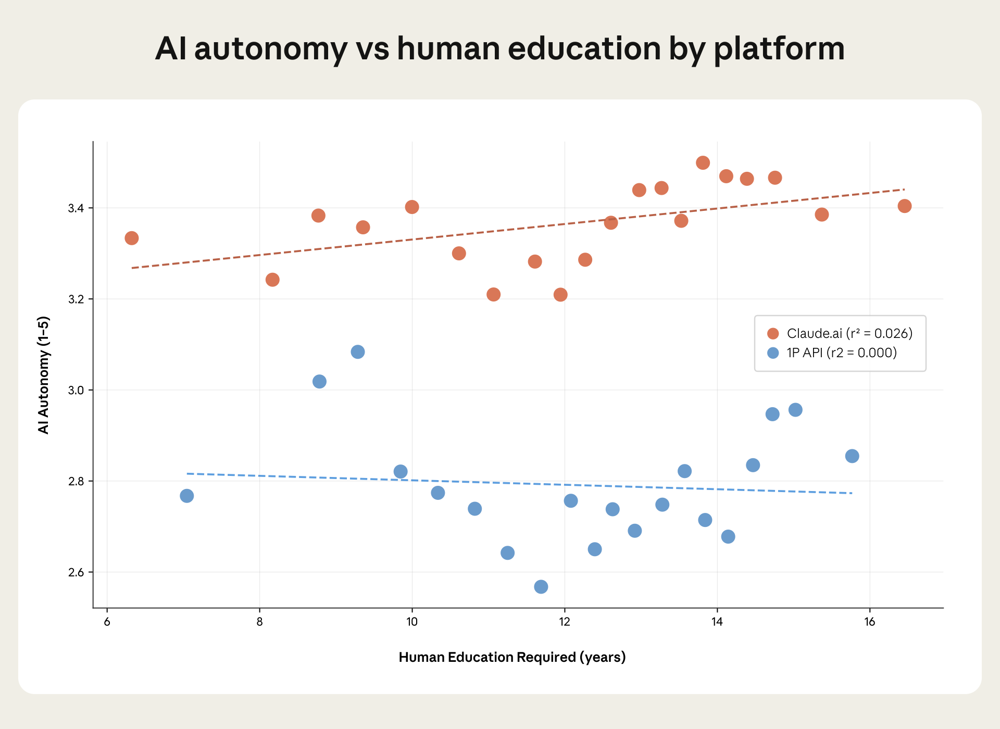
图 4.2：AI 自主性与人类教育的关系。该图显示 AI 自主性与所需人类教育之间双变量关系的分箱散点图，全部在 O*NET 任务级别测量。虚线显示线性回归的拟合。
但请注意，这些分布并不覆盖相同的任务集。API 使用覆盖经济中较窄的任务范围，正如第一章中的集中度图所示。在 API 数据中使用量大的高教育任务包括安全分析、测试和质量保证以及代码审查，而 Claude.ai 用户更可能有迭代的、指导性的会话。
真实世界使用中的任务时域
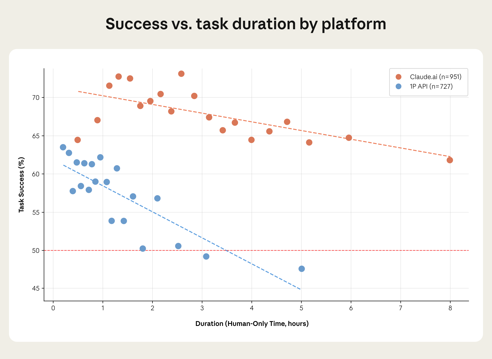
图 4.3：任务成功率与人类单独时间的关系。 该图显示任务成功率（%）与任务要求人类单独完成时间之间双变量关系的分箱散点图，全部在 O*NET 任务级别测量并按平台拆分。虚线显示线性回归的拟合。最近关于 AI「任务时域」（task horizons）的工作（Kwa 等，2025）发现，AI 成功率随任务时长下降：更长的任务更难被模型完成。然而，随着每一代新模型的出现，这种下降变得更加平缓，因为模型在日益长时间的任务上取得成功。METR 将任务时域主要操作化为模型达到至少 50% 成功率的最大时长，该指标的增长已成为 AI 进步的关键指标。 图 4.3 显示了一个使用我们原语的类似指标。该图显示任务级成功率与所需人类时间的对比，全部在 ONET 任务级别。在 API 数据中，成功率从低于 1 小时任务的约 60% 下降到估计需要人类 5 小时以上任务的约 45%。拟合线在 3.5 小时处穿过 50% 成功率水平线，表明 API 调用在 3.5 小时的任务上达到 50% 成功率。METR 软件工程基准中的类似时间估计是 Sonnet 4.5 为 2 小时，Opus 4.5 约为 5 小时。（本报告中的数据早于 Opus 4.5 的发布。） Claude.ai 数据讲述了不同的故事。成功率作为任务长度的函数下降得慢得多。使用线性拟合外推，Claude.ai 将在约 19 小时时达到 50% 成功率。这可能反映了多轮对话如何有效地将复杂任务分解为更小的步骤，每轮都提供一个反馈循环，允许用户纠正方向。 值得注意的是，与 METR 设置的一个根本区别是选择。METR 构建了一个基准，其中一组固定的任务被分配给模型。在我们的数据中，用户选择把哪些任务带给 Claude。这意味着观察到的成功率不仅反映模型能力，还反映用户对什么会奏效的判断、为 Claude 设置问题的成本，以及任务成功时的预期时间节省。 例如，如果用户避免他们预期会失败的任务，观察到的成功率将高估完整潜在任务分布上的真实能力。这种选择可能在两个平台上都存在，但方式不同：API 客户选择适合自动化的任务，而 Claude.ai 用户选择可能受益于迭代的任务。同样由于这种选择效应，无法保证性能更强的模型会在此图中显示改进，因为用户可能会通过提供本来相似的 ONET 任务的更具挑战性的表述来回应新模型。 像 METR 这样的受控基准测量自主能力的前沿。我们的真实世界数据可以测量_有效_任务时域，反映模型能力和用户行为的混合，并扩展到编码任务之外。两种方法都发现 AI 对需要数小时人类工作的任务是有效的。
用有效的 AI 覆盖重新审视职业渗透
我们较早的工作发现，36% 的工作在其至少四分之一的任务中有 AI 使用，约 4% 达到 75% 的任务覆盖。然而，这一指标仅基于任务在我们的数据中的出现。本报告引入的原语可以帮助更好地描述 AI 如何改变职业的工作内容。³
首先，我们发现任务覆盖率正在增加。综合各份报告，49% 的工作在其至少四分之一的任务中出现了 AI 使用。但将任务在职业中的占比以及 Claude 的平均成功率纳入考量，表明受影响的职业集合有所不同。
我们将有效 AI 覆盖定义为 Claude 可以成功执行的工人一天时间的百分比。它计算为任务成功率的加权和，其中每个任务的权重是其在工人时间中的占比，并按任务发生的频率调整。成功率来自我们的原语，小时估计来自我们之前关于生产力效应的研究，频率估计来自 ONET 数据，其中被调查的工人表明他们执行该任务的频率。
下图显示了有效 AI 覆盖（y 轴）与单独的任务覆盖（x 轴）的差异。两者高度相关，但存在关键差异。在图的右侧，覆盖度高的职业——几乎所有任务都以一定频率出现在 Claude 数据中——通常落在 45 度线以下。这表明即使 90% 的任务覆盖也不一定意味着巨大的工作影响，因为 Claude 可能在关键的已覆盖任务上失败或错过最耗时的任务。
 图 4.4：有效 AI 覆盖与任务覆盖的关系
图 4.4：有效 AI 覆盖与任务覆盖的关系
* 该图显示职业级别的任务有效 AI 覆盖（%）与任务覆盖之间的双变量关系散点图。有效 AI 覆盖追踪 AI 能够成功执行的工人按时间加权职责的份额，基于 Claude.ai 数据。任务覆盖是出现在 Claude.ai 使用中的任务份额。虚线显示有效 AI 覆盖份额等于任务覆盖的位置。
放大来看，几个职业的有效 AI 覆盖与任务覆盖相比显示出巨大差异。例如，数据录入工人的有效 AI 覆盖最高之一。这是因为尽管他们的九个任务中只有两个被覆盖，但他们最大的任务——阅读和录入源文档中的数据——在 Claude 上成功率很高。AI 擅长他们花费大部分时间做的事情。 医疗转录员和放射科医生也上移，因为他们被覆盖的任务恰好是他们最耗时和最高频的工作。对于放射科医生，他们的前两大任务——解读诊断图像和准备解读报告——成功率很高。这些职业的任务覆盖低，因为 AI 无法完成其职业画像中的动手或行政工作，但它在主导其工作日的核心知识工作上成功。 微生物学家落在 45 度线以下，表明有效 AI 覆盖低于仅凭任务覆盖所预测的。Claude 覆盖了他们一半的任务，但不是他们最耗时的任务：使用专门实验室设备的动手研究。 这一指标可以说给出了职业级 AI 渗透更现实的图景。然而，其影响取决于这些 Claude 对话在多大程度上实际取代或增强原本由人类完成的工作。对于数据录入员，AI 很可能确实替代了以前手动执行的任务。但当一次 Claude 对话映射到教师进行讲座时，不太清楚这如何转化为工作中讲座时间的减少。在未来的工作中，我们可以利用我们的 1P API 数据来理解这些任务中有哪些正在被集成到生产工作流程中。
AI 对工作任务内容的影响
除了 AI 能成功执行工人一天中的多少时间之外，一个单独的问题是哪些任务被覆盖，以及它们往往是工作的高技能还是低技能组成部分。最近的研究研究了工作内任务组合的变化，以理解 AI 对工资和就业的影响（Autor and Thompson 2025；Hampole 等 2025）。一个关键见解是，自动化的影响不仅取决于覆盖了多少任务，还取决于哪些任务。 为了看看当我们移除 AI 可以执行的任务时工作如何变化，我们首先构建一个每个任务所需技能水平的指标。O*NET 不提供任务级的教育要求，因此我们训练一个模型，使用 BLS 的职业级教育作为目标⁴，从任务嵌入预测受教育年限。这样，一个低教育职业如果拥有看起来像通常存在于高教育职业中的任务，仍可能有一个高技能任务。例如，法律秘书是一个 12 年教育的职业，但任务「查阅法律出版物并执行数据库搜索以识别与待决案件相关的法律和法院判决」被预测需要 17.7 年，因为它类似于通常由律师和法律助理执行的任务。 数据显示，Claude 倾向于覆盖需要更高教育水平的任务。经济中任务的平均预测教育为 13.2 年。对于我们在数据中看到的任务，平均预测值高出约一年，为 14.4 年（对应副学士学位）。这与早期报告中的职业级结果一致，显示白领职业的 Claude 使用更多。
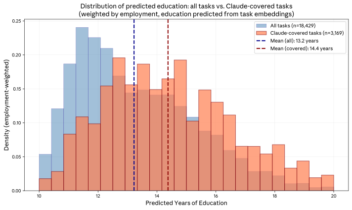
图 4.5：所有任务与 Claude 覆盖任务的教育水平这显示两个直方图。蓝色条形给出 O*NET 数据库中所有任务预测的任务级所需教育的分布，按就业加权。橙色条形显示相同的分布，但仅限于出现在 Claude.ai 数据中的任务。
接下来我们计算移除 AI 覆盖的任务如何改变剩余任务的平均教育水平。总体而言，净一阶效应是使工作技能降级，因为 AI 移除了需要相对较高教育水平的任务。一个经历这种技能降级的职业是技术写作人员，它失去「分析特定领域的发展以确定修订需求」（18.7 年）和「审查已出版材料并建议修订或范围、格式变更」（16.4 年）等任务，留下「绘制草图以说明指定材料」（13.6 年）和「观察生产、开发性和实验性活动」（13.5 年）等任务。旅行社也经历技能降级，因为 AI 覆盖「规划、描述、安排和销售行程旅游套餐」（13.5 年）和「计算旅行和住宿费用」（13.4 年）等任务，而「打印或申请运输承运商票券」（12.0 年）和「收取运输和住宿费用」（11.5 年）等任务保留。几个教学职业经历技能降级，因为 AI 处理评分、为学生提供建议、撰写资助申请和进行研究等任务，但无法进行亲自授课和管理课堂的动手工作。 有些工作的平均教育水平提高。房地产经理经历技能升级，因为 AI 覆盖例行行政任务——维护销售记录（12.8 年）、对照市场租金审查租金（12.6 年）——而需要更高水平专业判断和面对面互动的任务保留，如获得贷款、与建筑公司谈判以及与董事会会面。 这些模式说明了未来几年随着工作内容响应 AI 进行调整，工作可能如何演变。如果教育水平可以像 Autor and Thompson 分析中的专业知识那样解释，他们的框架可能预测技术写作人员和旅行社的工资将下降、就业将增加；相反，房地产经理将专精于复杂谈判和利益相关者管理，就业收缩而工资增加。⁵ 然而，我们基于教育的指标不同于 Autor 和 Thompson 的专业知识概念：他们的框架会将一些任务标记为高专业知识，而我们的指标则将其指定为低教育——例如电工任务「将电线连接到断路器、变压器或其他组件」。而且这些预测基于当前的 Claude 使用模式，这些模式将随着模型在新技术上训练和用户发现新应用而改变——可能改变哪些任务被覆盖，以及净效应是技能降级还是技能升级。
重新审视 Claude 使用的总体生产力影响
在早期工作中，我们估计 AI 的广泛采用可能在未来十年内每年将美国劳动生产率增长提高 1.8 个百分点。这里我们重新审视该分析，纳入本报告引入的任务成功率原语和对任务互补性的更丰富处理。 基于与我们 100 万次 Claude.ai 对话样本⁶中至少 200 个观测值任务相关的加速，我们复制了之前的发现：当前代 AI 模型和当前使用模式意味着未来十年每年 1.8 个百分点的生产力效应。⁷ 纳入 1P API 数据后，我们可以评估隐含的劳动生产率效应是否因企业 Claude 部署模式而不同。有两股相互抵消的力量在起作用：API 使用更集中在较窄的任务和职业集（尤其是编码相关工作），这往往会降低隐含效应；但正如 图 4.1 所示，API 任务中的任务级加速平均更高。这些力量大致抵消：API 样本同样意味着未来十年劳动生产率增加 1.8 个百分点。 对该分析的一个突出批评是它没有考虑模型可靠性。如果工人必须验证 AI 输出，生产力收益将小于原始加速所暗示的。为了评估这个渠道在数量上有多重要，我们纳入本报告引入的任务成功率原语，在聚合之前将任务级时间节省乘以任务特定的成功率。⁸ 这一调整产生了有意义的影响：基于 Claude.ai 使用，未来十年隐含的生产力增长从每年 1.8 个百分点下降到 1.2 个百分点，对 API 流量则下降到 1.0 个百分点。然而，即使考虑可靠性后，隐含影响仍然在经济上显著——未来十年每年持续增加 1.0 个百分点将使美国生产力增长回到 1990 年代末和 2000 年代初的水平。第二个批评涉及任务互补性。如果某些任务是必不可少的且不容易被替代，那么无论其他任务上的加速如何，总体生产力效应都将受到限制。教师可以更高效地用 AI 准备教案，但在课堂上与学生相处的时间却没有影响。 为了使这一想法可操作化，我们在职业内对任务级时间节省的聚合方式施加一些结构，但在其他方面与主分析一样累加职业效率收益。具体来说，我们假设在每个职业内，任务按照恒定替代弹性（CES）聚合器组合，其中每个任务按我们之前对 Claude 使用隐含生产力效应的分析中计算的每个任务的估计时间加权。⁹ 关键参数是跨任务的替代弹性 σ。当替代弹性小于 1 时，任务是互补的，那些未被 AI 加速的任务成为更广泛生产力收益的瓶颈。或者，当替代弹性大于 1 时，工人可以分配到更有生产力的任务——从而放大职业层面的总体时间节省。替代弹性等于 1 是一个特殊情况，它复现了上面的主分析。 图 4.6 报告了针对不同任务可替代性值进行的这一练习的结果。正如预期，当替代弹性等于 1 时，隐含的生产力效应与我们的基线分析相同：Claude.ai 和 API 样本都意味着未来十年劳动生产率增长每年增加约 1.8 个百分点。
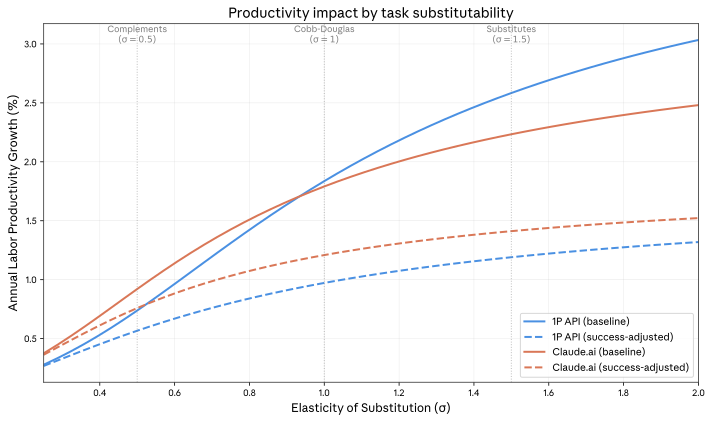
图 4.6 作为职业内任务可替代性函数的 AI 隐含劳动生产率效应此图显示了基于我们 100 万次 Claude.ai 对话样本和 100 万条 1P API 流量记录中至少 200 个观测值任务估计的效率收益，未来十年隐含的总体劳动生产率增长。替代弹性决定了非 AI 增强任务在多大程度上约束 Claude 使用隐含的职业生产力收益，模型假设职业产出是跨任务的 CES 指数。弹性 =1 复现了我们未调整的基线结果：未来十年劳动生产率增长增加 1.8 个百分点。成功率调整后的曲线用任务可靠性折现任务级加速。更多细节见正文。 然而，当任务是互补的，隐含的总体劳动生产率影响急剧下降，因为经济效应被 AI 加速最少的任务瓶颈化。例如，在 =0.5 时，隐含的总体劳动生产率效应为每年 0.7-0.9 个百分点——约为我们基线估计暗示的一半。额外调整任务成功率进一步将 Claude.ai 的隐含生产力效应降至 0.8 个百分点，API 降至 0.6 个百分点。 另一方面，当替代弹性大于 1 时，基于 Opus 4.5 之前使用模式的隐含劳动生产率要高得多。例如，在 =1.5 时，隐含的劳动生产率效应上升到每年 2.2-2.6 个百分点，与在 AI 提供最大加速的任务上更大的专业化一致。 在这两种情况下，基于 API 流量的隐含生产力影响对任务可替代性程度的响应更大。这与事实一致：与 Claude.ai 相比，API 流量有更大份额集中在更少的任务和相关职业中：当任务是互补的，这种集中放大了瓶颈问题；当它们是替代品，它放大了任务专业化带来的生产力收益。 这一分析表明的是，自动化的生产力效应最终可能受到暂时无法被 AI 自动化的瓶颈任务的约束。而日益强大的 AI 的劳动力市场影响也可能受到类似力量的制约。例如，Gans and Goldfarb (2026) 认为，工作中瓶颈任务的存在意味着部分 AI 自动化可能导致劳动收入增加，因为此类任务的经济价值上升（至少在一个工作被_完全_自动化之前）。
结论
本章的要点是，AI 对经济的影响不太可能是均匀的。正如我们的有效 AI 覆盖框架所示，对不同工人的劳动力市场影响将取决于前沿 AI 工具对其最核心任务的可靠性。 但劳动力市场效应也可能取决于 AI 能够熟练处理的任务相对于经济其他部分的技能要求。事实上，我们发现，从经济中移除 Claude 已经可以处理的任务会产生净技能降级效应：留给人类的任务的教育要求低于 AI 处理的任务。 虽然这极具提示性，但它可能遗漏一个重要细节：使用 Claude 的最复杂任务往往也是它最困难的任务。这不会取代高技能专业人员，反而可能强化他们互补专业知识在理解 AI 的工作和评估其质量方面的价值。 与这些变革性劳动力市场效应相对应的是对增长和生产力更广泛的影响。一方面，将任务可靠性纳入我们的分析，削弱了当前 Claude 使用模式所告知的劳动生产率增长隐含效应。如果瓶颈任务起约束作用，隐含影响将进一步减弱。另一方面，模型能力的持续增长表明任务覆盖和任务成功率都可能提高，这反过来可能增加生产力影响。 ¹ 当我们研究原语与 O*NET 之间的相关性时，我们限制为出现在至少 100 次对话中的任务以减少测量误差。在覆盖分析中，我们使用所有高于隐私阈值 15 的任务。 ² 我们的在线附录可在 https://huggingface.co/datasets/Anthropic/EconomicIndex 获取。 ³ 另见 Tomlinson 等 (2025) 的相关 AI 适用性评分。 ⁴ 我们使用预训练的句子转换器（all-mpnet-base-v2）为每个任务陈述生成嵌入，并使用岭回归预测教育。 ⁵ 另一方面，一些历史证据表明，当自动化工作任务的技术出现在专利数据中时，受影响职业的就业和工资随后会下降（Webb 2020）。 ⁶ 当我们首次评估 Claude 使用的总体生产力影响时，我们依赖于 2025 年秋季 100k 次 Claude.ai 对话的样本。基于我们观察到加速的任务集，我们估计未来十年劳动生产率每年可能高出 1.8 个百分点。将样本扩大到 100 万次观测意味着我们需要对如何处理极少发生的任务采取立场——鉴于使用遵循幂律分布，这些任务非常常见，正如我们在过去报告中记录的。我们选择 0.02% 的阈值，因为它复现了我们之前对 Claude.ai 对话样本的结果。出于隐私保护原因，我们只分析至少包含 15 个观测值的任务，对于 100k 样本这意味着 0.015% 的隐含阈值。因此我们的结果在样本间内部一致。如果我们不对 100 万样本施加限制，并假设样本中任何任务的效率收益（即使是 100 万中只有 15 个观测值的任务），未来十年的隐含总体劳动生产率增长将约为每年 5 个百分点——这是基于包含更大任务集的机械性增长。 ⁷ 与之前一样，这一结果基于将 Hulten 定理应用于任务级生产力冲击，并假设相应的全要素生产率一次性增加在十年内连同资本深化效应一起实现。 ⁸ 提醒一下，为了聚合到隐含劳动生产率，我们计算任务级效率收益为人类无 AI 时间与有 AI 时间的对数差。当然还有其他基于任务可靠性进行调整的方式。如果我们样本中的任务由 AI 适用性异质的子任务组成，且工人只在 AI 有效的子任务上最优地部署 AI，那么用成功率缩放效率收益捕捉了任务内 AI 采用的扩展边际。 ⁹ 我们使用 CES（恒定替代弹性）生产函数将任务级时间节省聚合为经济范围的生产力影响。弹性参数 σ 控制工人在任务之间替代的容易程度。当 σ=1 时，我们直接应用 Hulten 定理：总体生产力收益等于跨任务对数加速的工资份额加权和。对于 σ≠1，我们使用两级聚合：首先，在每个职业内，我们计算职业级加速为按时间比例加权的任务加速的 CES 聚合，使用 ρ=(σ-1)/σ。然后我们将 Hulten 定理应用于这些职业级加速。当 σ<1（互补）时，生产力收益被加速最小的任务瓶颈化。当 σ>1（替代）时，工人可以专精于 AI 提供最大加速的任务，放大总体收益。对于没有观察到 AI 加速数据的任务，我们假设没有生产力变化。我们感谢 Pascual Restrepo 建议进行这一特定练习。
结束语
这份第四份 Anthropic 经济指数报告引入了经济原语——AI 使用的基础特征——展示了消费者和企业如何使用 Claude。我们使用 Claude 来估计使用在这些维度上的变化程度；这些指标具有方向准确性，并且合在一起，即使单个分类不完美，也能提供重要信号。 我们的发现对 AI 将如何重塑经济和劳动力市场具有重大意义。值得注意的是，Claude 往往在需要更高教育的任务上被使用得更多，并且似乎提供更大的生产力提升。如果这些任务对美国工人来说收缩，净效应可能是工作技能降级。但这些影响关键取决于任务间的互补性，以及特定任务生产力的提高是否可能增加对其的需求。 在全球层面，人均收入与使用模式之间的强关系——高收入国家协作使用 Claude，而低收入国家专注于课程作业和特定应用——表明 AI 的影响将由现有制度结构调节，而不是均匀展开。地理扩散模式强化了这一图景。在美国国内，人均使用量略有趋同；在全球范围内，扩散较慢。结合 AI 使用方式中收入驱动的差异，这引发了关于 AI 将缩小还是扩大国际经济差距的问题。 与本报告记录的模式同样重要的是本报告及后续报告之间的潜在变化。随着 AI 能力的进步，Claude 的成功率可能提高，使用模式可能显示更大的自主性，用户可能应对新的更复杂的任务，而被证明可自动化的任务可能从交互式聊天升级为 API 部署。我们将随时间跟踪这些动态，提供 AI 在经济中作用的纵向视角。 在先前的发布基础上，本版显著扩大了所分享使用数据的范围和透明度，包括沿新维度的任务级分类和首次提供的全球区域细分。我们发布这些数据是为了让研究人员、记者和公众能够研究关于 AI 经济影响的新问题，这些问题可以构成政策回应的实证基础。 用户愿意如何试验 AI，以及政策制定者是否创造一个既促进安全又促进创新的监管环境，将塑造 AI 如何变革经济。要让 AI 惠及全球用户，仅扩大可及性是不够的——发展能够实现有效使用的人力资本，尤其是在低收入经济体中，至关重要。
作者与致谢
第一作者区*：
Ruth Appel, Maxim Massenkoff, Peter McCrory *报告的主要作者
第二作者区：
Miles McCain, Ryan Heller, Tyler Neylon, Alex Tamkin
致谢
Xabi Azagirre, Tim Belonax, Keir Bradwell, Andy Braden, Dexter Callender III, Sylvie Carr, Miriam Chaum, Ronan Davy, Evan Frondorf, Deep Ganguli, Kunal Handa, Andrew Ho, Rebecca Jacobs, Owen Kaye-Kauderer, Bianca Lindner, Kelly Loftus, James Ma, Jennifer Martinez, Jared Mueller, Kelsey Nanan, Kim O'Rourke, Dianne Penn, Sarah Pollack, Ankur Rathi, Zoe Richards, Alexandra Sanderford, David Saunders, Michael Sellitto, Thariq Shihipar, Michael Stern, Kim Withee, Mengyi Xu, Tony Zeng, Xiuruo Zhang, Shuyi Zheng, Emily Pastewka, Angeli Jain, Sarah Heck, Jared Kaplan, Jack Clark, Dario Amodei
引用
@online{anthropic2026aeiv4,
author = {Ruth Appel and Maxim Massenkoff and Peter McCrory and Miles McCain and Ryan Heller and Tyler Neylon and Alex Tamkin},
title = {Anthropic Economic Index report: economic primitives},
date = {2026-01-15},
year = {2026},
url = {https://www.anthropic.com/research/anthropic-economic-index-january-2026-report},
}
相关内容
进一步了解 Claude 的数学能力
一个未公开发布的研究版 Claude 在与黎曼猜想（Riemann hypothesis）相关的问题上取得了进展。它改进了满足该猜想的黎曼 zeta 函数零点比例的长期下界，将其从 41.6% 提高到 67.2%。 了解更多
用 Claude 发现密码学弱点
密码算法。第一个攻击显著削弱了 HAWK——一种为未来量子计算机能够破解现有标准的世界而构建的数字签名方案。第二个攻击则发现了一种攻击轮数缩减版 AES（使用最广泛的对称密码）的新方法。 了解更多
Project Pilot：AI 能控制无人机吗？
我们与 Andon Labs 合作开发了一系列评估，用于评估 AI 模型使用飞行无人机的能力，最终形成了一个新的基准测试：Drone-Bench。 了解更多
▸ 英文原文（点击展开）
Anthropic Economic Index report: Economic primitives
- Category: Economic Research
- Source: https://www.anthropic.com/research/anthropic-economic-index-january-2026-report
Economic Research
Anthropic Economic Index report: Economic primitives
Jan 15, 2026
Download PDF
Introduction
How is AI reshaping the economy?
This report introduces new metrics of AI usage to provide a rich portrait of interactions with Claude in November 2025, just prior to the release of Opus 4.5. These “primitives”—simple, foundational measures of how Claude is used, which we generate by asking Claude specific questions about anonymized Claude.ai and first-party (1P) API transcripts—cover five dimensions relevant to AI’s economic impact: user and AI skills, how complex tasks are, the degree of autonomy afforded to Claude, how successful Claude is, and whether Claude is used for personal, educational, or work purposes. The results reveal striking geographic variation, real-world estimates of AI task horizons, and a basis for revised assessments of Claude's macroeconomic impact. The data we release alongside this report are the most comprehensive to date, covering five new dimensions of AI use, consumer and firm use, and country and region breakdowns for Claude.ai.
What has changed since our last report
In the first chapter, we revisit findings from our previous Economic Index report published in September 2025. We find:
* Claude usage remains concentrated among certain tasks, most of them related to coding
While we see over 3,000 unique work tasks in Claude.ai, the top 10 most common tasks account for 24% of our sampled conversations, a slight increase since our last report. Augmentation patterns (conversations where the user learns, iterates on a task, or gets feedback from Claude) edged to just over half of conversations on Claude.ai. In contrast, automated use remains dominant in 1P API traffic, reflecting its programmatic nature.
* Global usage remains persistently uneven while US states converge
The US, India, Japan, the UK, and South Korea lead in overall Claude.ai use. Worldwide, uneven adoption remains well-explained by GDP per capita. Within the US, workforce composition plays a key role in shaping uneven adoption as states with more computer and mathematical professionals show systematically more Claude usage.
While substantial concentration remains, since our last report Claude usage has become noticeably more evenly distributed across US states. If sustained, usage per capita would be equalized across the country in 2-5 years.
Introducing and analyzing our new economic primitives
In the second chapter we discuss the motivation for and introduce our new economic primitives, including how they were selected and operationalized, and their limitations. We additionally present evidence that our primitives capture directionally accurate aspects of underlying usage patterns as compared to external benchmarks. In chapters three and four we use these primitives to further investigate implications for adoption and productivity. We find:
* Claude use diversifies with higher adoption and income
While the most common use of Claude is for work, coursework use is highest in countries with the lowest GDP per capita, while rich countries show the highest rates of personal use. This aligns with a simple adoption curve story: early adopters in less developed countries tend to be technical users with specific, high-value applications or use Claude for education, whereas mature markets see usage diversify toward casual and personal purposes.
* Claude succeeds on most tasks, but less so on the most complex ones
We find that Claude generally succeeds at the tasks it is given, and that the education level of its responses tends to match the user's input. Claude struggles on more complex tasks: As the time it would take a human to do the task increases, Claude’s success rate falls, much like prominent evals measuring the longest tasks that AIs can reliably perform.
* Job exposure to AI looks different when success rates are factored in
We also use the success rate primitive to better understand job exposure to AI, calculating the share of each occupation that Claude can perform by weighting task coverage by both success rates and the importance of each task within the job. For some occupations, like data entry keyers and database architects, Claude shows proficiency in large swaths of the job.
* Claude is used for higher-skill tasks than those in the broader economy
The tasks we observe in Claude usage tend to require more education than those in the broader economy. If we assume that AI-assisted tasks diminish as a share of worker responsibilities, removing them would leave behind less-skilled work. But this simple task displacement would not affect white-collar workers uniformly—for some occupations it removes the most skill-intensive tasks, for others the least.
Without the tasks that we observe Claude performing, travel agents would experience deskilling as complex planning work gives way to routine ticket purchasing and payment collection. Property managers, by contrast, would experience upskilling as bookkeeping tasks give way to contract negotiations and stakeholder management.
A new window for understanding AI’s impact on the economy
These results provide a new window into how AI is currently impacting the economy. Knowing the success rate of tasks gives a more accurate picture of which tasks might be automated, how impacted certain jobs might be, and how labor productivity will change. Measuring differential performance by user education sheds light on inequality effects. Indeed, the close relationship between education levels in inputs and outputs signals that countries with higher educational attainment may be better positioned to benefit from AI, independent of adoption rates alone. This data release aims to enable researchers and the public to better understand the economic implications of AI and investigate the ways in which this transformative technology is already having an effect.
Chapter 1: What has changed since our last report
Overview
Because frontier AI model capabilities are improving rapidly and adoption has been swift, it is important to regularly take stock of changes in how people and businesses are using such systems—and what this usage implies for the broader economy.1
In this chapter we analyze how Claude usage and diffusion patterns changed from August 2025 to November 2025 just prior to the release of Opus 4.5. We make four observations:
1. Usage remains highly concentrated across tasks :
The ten most common tasks represent 24% of observed usage on Claude.ai, up from 23% in our last report. For first-party (1P) API enterprise customers, concentration among tasks increased more notably: the top ten tasks now represent 32% of traffic, up from 28% in the last report.
2. Augmentation is once again more common than automation on Claude.ai:
In our previous report we noted that automated use had risen to exceed augmented use on Claude.ai, perhaps capturing both improving capabilities and greater familiarity among users with LLMs. Data from November 2025 points to a broad-based shift back toward augmented use on Claude.ai: The share of conversations classified as augmented jumped 5pp to 52% and the share deemed automated fell 4pp to 45%.2 Product changes during this period—including file creation capabilities, persistent memory, and Skills for workflow customization—may have shifted usage patterns toward more collaborative, human-in-the-loop interactions.
3. Within the US, lower usage states have relatively faster gains in adoption
Within the US, usage per capita remains largely shaped by how well-matched the workforce is to broader Claude usage: For example, states with a larger share of workers in computer and mathematical occupations tend to have higher usage. Indeed, the top five US states account for nearly half (50%) of all usage despite representing only 38% of the working-age population.
Nevertheless, there are early signs of rapid regional convergence in adoption: usage has increased relatively faster for states that had lower usage in our last report. If sustained, usage per capita would be equalized across the country in 2-5 years, a pace of diffusion roughly 10x faster than the spread of previous economically consequential technologies in the 20th century.3
While this is consistent with rapid AI adoption and diffusion, this estimate comes with uncertainty given that it is based on a change observed over a three month period. Diffusion may ultimately proceed more slowly in the months and years to come.
4. Global usage shows little sign of increasing or decreasing regional convergence
Globally, Claude usage per capita—as captured by the Anthropic AI Usage Index (AUI)—remains highly uneven and strongly correlated with GDP. These gaps are stable: we see no evidence that low-use countries are catching up or that high-use countries are pulling away.
Shifting patterns of usage across tasks and associated occupations
Even though frontier LLMs have an impressive range of capabilities relevant to every facet of the modern economy, Claude usage remains very concentrated among a small number of tasks. As compared to nearly one year ago, consumer usage on Claude.ai is modestly more concentrated: The share of conversations assigned to the ten most prevalent ONET tasks was 24% in November 2025, 1pp higher than in August and up from 21% in January 2025. The most prevalent task in November 2025—modifying software to correct errors—alone represented 6% of usage.
In our last Anthropic Economic Index Report we began tracking business adoption patterns by studying Claude usage among 1P API customers. The ten most common tasks grew from 28% of API records in August to 32% in November. Rising concentration among a small set of tasks suggests the highest-value applications continue to generate outsized economic value even as models have become more capable at a wider range of tasks. As with Claude.ai the most common task among API customers was modifying software to correct errors, which accounted for one in ten records.
Figure 1.1: Usage shares among top 10 tasks over time by platform, Claude.ai and 1P API.
Share of conversations assigned to the ten most prevalent ONET tasks, by platform and report version.
Indeed, computer and mathematical tasks—like modifying software to correct errors—continue to dominate Claude usage overall, representing a third of conversations on Claude.ai and nearly half of 1P API traffic. Such dominance has subsided on Claude.ai: the share of conversations on Claude.ai assigned to such (mostly) coding-related tasks is down from a peak of 40% in March 2025 to 34% in November 2025. At the same time, the share of transcripts assigned to computer and mathematical tasks among 1P API traffic edged higher from 44% in August to 46% in November 2025 (Figure 1.2).
Figure 1.2:Claude.ai and API usage over time.
Each panel shows the share of sampled conversations on Claude.ai and 1P API records associated with tasks from each Standard Occupation Classification (SOC) major group.
The second largest share of Claude.ai usage in November 2025 was in the Educational Instruction and Library category. This corresponds mostly to help with coursework and review, and the development of instructional materials. Such usage has risen steadily since our first report, up from 9% of conversations on Claude.ai in January 2025 to 15% in November.
The share of usage on Claude.ai for Arts, Design, Entertainment, Sports, and Media tasks increased between August and November 2025 as Claude was used in a growing share of conversations for writing tasks, primarily copyediting and the writing and refinement of fictional pieces. This jump in the prevalence of design- and writing-related tasks reversed a steady decline across earlier reports. For both Claude.ai and API customers, there was a drop in the share of conversations/transcripts where Claude was used for Life, Physical, and Social Science-related tasks. Perhaps the most notable development for API customers was the increase in the share of transcripts associated with Office and Administrative Support related tasks, which rose 3pp in August to 13% in November 2025. Because API use is automation-dominant, this suggests that businesses are increasingly using Claude to automate routine back-office workflows such as email management, document processing, customer relationship management, and scheduling.4
Augmentation is again dominant on Claude.ai
How AI will affect the economy depends not just on the tasks Claude is used for but the way that users access and engage underlying model capabilities. Since our first report, we have classified conversations into one of five interaction types, which we group into two broader categories: automation and augmentation.5
Figure 1.3 plots how automated versus augmented use has evolved over time since we first started collecting this data one year ago. In January 2025, augmented use of Claude was dominant: 56% of conversations were classified as augmentation compared to 41% automated.6 In August 2025, more conversations were classified as automated as compared to augmented.
This was a notable development since it suggested that rapid improvements in model capabilities and platform functionality coincided with users increasingly delegating tasks entirely to Claude. This was evident in the “directive” collaboration mode, which is further grouped as automation. Directive conversations are those in which users give Claude a task and it completes it with minimal back-and-forth. From January 2025 to August 2025 the share of such directive conversations rose from 27% to 39%.7
Three months later, the share of directive conversations had fallen 7pp to 32% in November 2025 as augmentation once again became more prevalent on Claude.ai than automation. Nevertheless, the automation share was still elevated as compared to nearly one year ago when we first began tracking this measure, suggesting that the underlying trend is still toward greater automation even as the August spike overstated how quickly it was materializing.
While we see some evidence of a shift toward soft skill usage on Claude.ai with design, management, and education now higher, the shift back toward augmented use was broad-based in November (Figure 1.4). The rise in augmented use was driven mainly by users iterating with Claude to complete tasks (“task iteration”) rather than asking Claude to explain concepts (“learning”). See Figure 1.5 for common words associated with the three most common interaction modes across ONET tasks and bottom-up descriptions of requests made of Claude.
Figure 1.3: Collaboration mode share over time by platform, Claude.ai and 1P API.
Collaboration mode frequencies across Anthropic Economic Index Reports.
Figure 1.4: Directive, Task Iteration, and Learning collaboration shares by Standard Occupation Classification (SOC) major group.
For each SOC major group we calculate the share of conversations on Claude.ai associated with Directive, Task Iteration, and Learning from among ONET tasks that have at least 100 observations in our sample. We weight observations by number of records to construct a representative sample.
Figure 1.5: Prominent words from among O*NET task titles and bottom-up request groupings by key collaboration type.
Word clouds constructed from among the top quartile of O*NET tasks and bottom-up request groups, ordered by the share of records classified as Directive, Task Iteration, and Learning from among tasks/requests with at least 1,000 observations. Directive interactions emphasize production ('create,' 'develop,' 'draft'); Task Iteration centers on refinement and iteration ('edit,' 'rewrite,' 'revise'); Learning focuses on explanation and knowledge transfer ('help,' 'explain,' 'provide'). Patterns are consistent across both classification methods. This analysis is not based on the words used in the underlying transcripts but rather groupings constructed using privacy-preserving methods.
Persistent regional concentration
In our previous report, we introduced the Anthropic AI Usage Index (AUI), a measure of whether Claude is over- or underrepresented in a given geography relative to the size of its working-age population. The AUI is defined as
An AUI above 1 indicates that a country uses Claude more intensively than its population alone would predict, while an AUI below 1 indicates lower-than-expected usage. For example, Denmark has an AUI of 2.1, meaning its residents use Claude at roughly twice the rate its share of the global working-age population would suggest.
A key fact about Claude usage globally is that it is geographically concentrated: a small number of countries comprise an outsized share of use. From a global perspective, little changed in this respect between August and November 2025. Indeed, the left panel of Figure 1.6 shows that the AUI concentration across countries was essentially unchanged between our last report and this report.
By contrast, usage became more evenly distributed across US states from August to November 2025: the Gini coefficient, a standard measure of equality, fell from 0.37 to 0.32. While it is important to exercise caution in interpreting short-run changes, this is a relatively large change toward perfect equality in which the AUI is equal to 1 for all states with a Gini coefficient of 0. If the Gini coefficient for the US again falls by 0.05 every three months, then parity of usage would be reached in roughly two years.
Figure 1.6: AUI concentration around the world and within the US in this and the prior report.
Lorenz curves for the Anthropic AI Usage Index (AUI) around the world and within the US, August and November 2025. A curve that is closer to the 45-degree line indicates less concentration. The plot on the right shows, for example, that the top 20 percent of US states accounted for 40 percent of population-adjusted usage in the US.
What shapes patterns of usage within the US and around the world? In our previous report we emphasized the key role played by income differences globally: Variation in Claude usage across countries is largely accounted for by variation in GDP per capita. In Chapter 3 we revisit the importance of income in shaping not just usage intensity but also patterns of usage around the world. Within the US, income is less clearly a predictor of usage. Instead, what appears to matter most is the composition of each state’s workforce and how well-matched the workforce is to Claude capabilities as reflected in task-level usage. States that have a higher share of workers in computer and mathematical occupations—like Washington D.C., Virginia, and Washington—tend to have higher usage per capita. Quantitatively, each 1% increase in the share of such tech workers in a state is associated with 0.36% higher usage per capita (Figure 1.7). This alone accounts for nearly two-thirds of the cross-state variation in AUI.
Figure 1.7: AUI and share of workers in Computer & Mathematical occupations in each US State.
This figure shows that the share of workers in Computer & Mathematical occupations across US states is highly correlated with the Anthropic AI Usage Index (AUI). This is consistent with the view that overall Claude usage patterns—and associated capabilities—are shaping regional adoption patterns within the US. This pattern holds more generally when formally calculating the KL divergence between each state’s workforce distribution and global Claude.ai usage shares by SOC major group.
While we would intuitively expect Claude usage to be higher in states with more tech workers, this pattern holds more generally: Usage per capita is higher in states with more workers in occupations where Claude usage is overrepresented as compared to the US workforce (e.g., Arts, Design, Entertainment, Sports and Media) or with relatively fewer workers in occupations where Claude usage is low as compared to the national economy (e.g., Transportation and Material Moving). This can be seen by calculating the Kullback–Leibler (KL) divergence between the composition of each state’s workforce and the global composition of Claude usage. States with a lower KL divergence—and thus with a workforce that looks more similar to Claude usage patterns—tend to have higher usage per capita.
Signs of faster Claude diffusion in the US among low usage states
While differences in workforce composition appear to play a role in shaping regional adoption within the US, early evidence suggests Claude is diffusing considerably faster than historical precedent would predict. Economically consequential technologies have historically taken around half a century to achieve full diffusion across the US (Kalanyi et al., 2025). By contrast, comparing Claude adoption rates in November 2025 to three months prior, we estimate that parity in adoption per capita across US states—as measured by the AUI—could be reached within 2–5 years. This estimate comes with a high degree of uncertainty as the precision of our estimates cannot rule out much slower rates of diffusion.
We generate this estimate through the lens of a simple model of diffusion, which we briefly describe here. We model diffusion as proportional convergence toward a common steady state of equalized usage per capita in which each state s has an AUI equal to 1:
Under this model, the log deviation of AUI from steady state (AUI = 1) shrinks by a factor of β every three months, implying a half-life of ln(.5)/ln( β ) quarters. For example, with quarterly data a value of β = 0.99 implies a half-life of about 17 years. To illustrate, starting from an initial AUI of 2, this means AUI would decline to around 1.4 after 17 years and to around 1.1 after 50 years. We take β = 0.99 as a sensible benchmark because it implies a pace of diffusion similar to economically consequential technologies in the 20th century.
This model of convergence motivates the following regression specification8:
Naively estimating this equation by ordinary least squares (OLS) yields an estimate of β̂ ≈ 0.77. Weighted least squares (WLS) where we weight by each state’s workforce yields an estimate of β̂ ≈ 0.76 (Figure 1.8). Both are statistically distinguishable from 1 at conventional levels. Taken at face value, these estimates imply that it would take little more than two years for each state's AUI to close most of the gap to 1.
Figure 1.8: Anthropic AI Usage Index (AUI) across the US, August 2025 (V3) and November 2025 (V4).
By comparing the AUI in November 2025 with its value in August 2025 we can estimate the implied rate of diffusion of Claude usage within the US. Under a model of proportional convergence toward a steady state in which AUI = 1 for all US states, the estimated elasticity can be used to calculate the pace of diffusion (see text for more details). Our range of estimates implies a pace of regional convergence of AUI in 2-5 years.
A concern with estimating convergence this way is that our AUI estimates are subject to sampling noise and other variation unrelated to diffusion. This can produce classical attenuation bias: even if AUI is not actually changing, our estimate of β could end up meaningfully below one.
To address this, we estimate the model by two-stage least squares (2SLS), instrumenting the log of AUI in August 2025 with the composition of each state's workforce, measured by its proximity to overall Claude usage patterns. The logic behind this instrument is that workforce composition is a strong predictor of Claude usage (relevance) but being measured independently, is expected to be uncorrelated with sampling noise in our AUI estimates (validity). As noted above, states with more workers in high-Claude-usage roles do tend to have systematically higher usage per capita.
The 2SLS estimates imply modestly slower convergence: β̂ ≈ 0.89 unweighted and β̂ ≈ 0.86 when weighting by each state’s working-age population. However, these estimates are less precise, and only the former is statistically distinguishable from 1 at the 10% level. Despite implying a slower convergence than OLS, the 2SLS estimates still imply rapid diffusion: just four to five years for the log deviation of each state's AUI to shrink by 90%.
That said, our estimates are based on just three months of data. And while the 2SLS specification may help address sampling noise, considerable uncertainty remains. We will revisit this question of the pace of diffusion in future reports.
1 As with previous reports, all our analysis is based on privacy-preserving analysis. Throughout the report we analyze a random sample of 1M conversations from Claude.ai Free, Pro and Max conversations (we also refer to this as “consumer data” since it mostly represents consumer use) and 1M transcripts from our first-party (1P) API traffic (we also refer to this as “enterprise data” since it mostly represents enterprise use). Both samples come from November 13, 2025 to November 20, 2025. We continue to manage data according to our privacy and retention policies, and our analysis is consistent with our terms, policies, and contractual agreements. For 1P API data, each record is a prompt-response pair from our sample period which in some instances is mid-session for multi-turn interactions. 2 The share of conversations on Claude.ai that were classified into neither automation nor augmentation categories fell from 3.9% to 3.0%. 3 See, for example, Kalanyi et al (2025): “Second, as the technologies mature and the number of related jobs grows, hiring spreads geographically. This process is very slow, taking around 50 years to disperse fully.” 4 With our bottom-up analysis of 1P API traffic we see Claude used to "Generate personalized B2B cold sales emails" (0.47%), "Analyze emails and draft replies for business correspondence" (0.28%), "Build and maintain invoice processing systems" (0.24%), "Classify and categorize emails into predefined labels" (0.23%), and "Manage calendar scheduling, meeting coordination, and appointment booking" (0.16%). 5 At a high level, we distinguish between automation and augmentation modes of using Claude. Automation encompasses interaction patterns focused on task completion: Directive: Users give Claude a task and it completes it with minimal back-and-forth; Feedback Loops: Users automate tasks and provide feedback to Claude as needed; Augmentation focuses on collaborative interaction patterns: Learning: Users ask Claude for information or explanations about various topics; Task Iteration: Users iterate on tasks collaboratively with Claude; Validation: Users ask Claude for feedback on their work . 6 These interaction modes are not mutually exhaustive. In some instances, Claude determines that a sampled conversation does not match any of the five interaction modes. 7 In this report we use Sonnet 4.5 for classification whereas in our previous Economic Index report we used Sonnet 4. We previously found that different models can generate different classification outcomes, though these effects tend to be modest. 8 We include a constant term in the regression since it should be equal to zero under the null hypothesis. Across all our specifications, the constant term is estimated to be close to and statistically indistinguishable from zero.
Chapter 2: Introducing economic primitives
The strength of the Anthropic Economic Index lies in showing not only how much AI is used, but how it is used. In prior reports, we showed which tasks Claude is used for, and how people collaborate with Claude. These data have enabled external researchers to analyze labor market shifts (e.g., Brynjolfsson, Chandar & Chen, 2025). In this edition of the Anthropic Economic Index, we expand the breadth of data available to external researchers by providing insights on five economic “primitives”, by which we mean simple, foundational measures of the ways that Claude is used, which we generate by asking Claude to answer specific questions about the anonymized transcripts in our sample. Some of our primitives encompass several such questions, and others use a single indicator. Because AI capabilities are advancing so rapidly and the economic effects will be unevenly experienced, we need a breadth of signals to uncover not just how Claude is used but also to inform what impact this technology will have.
Dimensions of AI use that matter for economic impacts
This report introduces five new economic primitives beyond the one we already measure, collaboration patterns (whether users automate or augment their tasks with Claude). These primitives capture five dimensions of a human-AI conversation: 1) task complexity, 2) human and AI skills, 3) work, coursework or personal use case, 4) the AI’s level of autonomy, and 5) task success (see Table 2.1). AI autonomy captures something different from our existing automation/augmentation distinction. For example, “Translate this paragraph into French” is high automation (directive, minimal back-and-forth) but low AI autonomy (the task requires little decision-making from Claude).
Table 2.1: Economic primitives added in this report.
The table shows the new economic primitives added in this report, beyond collaboration patterns (automation/augmentation) from prior reports. The first column shows the primitive category, the second column the name of the primitive, and the third column the operationalization of the primitives as the prompts provided to Claude which we use a classifier to map conversations to primitives. See online appendix at https://huggingface.co/datasets/Anthropic/EconomicIndex for full prompt texts.
Task complexity captures that tasks can vary in their complexity, including how long they take to complete and how difficult they are. A "debugging" task in ONET could refer to Claude fixing a small error in a function or comprehensively refactoring a codebase—with very different implications for labor demand. We measure complexity through estimated human time to complete tasks without AI, time spent completing tasks with AI, and whether users handle multiple tasks within a single conversation.
Human and AI skills address how automation interacts with skill levels. If AI disproportionately substitutes for tasks requiring less expertise while complementing higher-skilled work, it could be another form of skill-biased technical change—increasing demand for highly skilled workers while displacing lower skilled workers. We measure whether users could have completed tasks without Claude, and the years of education needed to understand both user prompts and Claude's responses.
Use case distinguishes professional, educational, and personal use. Labor market effects most directly follow from workplace use, while educational use may signal where the future workforce is building AI-complementary skills.
AI autonomy measures the degree to which users delegate decision-making to Claude. Our latest report documented rising "directive" use where users delegate tasks entirely. Tracking autonomy levels—from active collaboration to full delegation—helps forecast the pace of automation.
Task success* measures Claude’s assessment of whether Claude completes tasks successfully. Task success helps assess whether tasks can be automated effectively (can a task be automated at all?) and efficiently (how many attempts would it take to automate a task?). That is, task success matters for both the feasibility and the cost of automation labor tasks.
Selecting and validating the new measures
The new dimensions of AI use captured in our data were informed by our recent work on the productivity effects of Claude, feedback we received from external researchers, recent literature on AI’s economic impact through the lens of human capital and expertise (Vendraminell et al., 2025), and deliberation within our economic research team. Our main selection criteria were expected economic relevance, complementarity of dimensions, and whether Claude could classify conversations along that dimension with directional accuracy. We propose that multiple simple primitives, even if somewhat noisy and not perfectly accurate by themselves, can together provide important signals on how AI is being used. We therefore mainly tested for directional accuracy. For classifying task duration with and without AI, we used minimally modified versions of our prior productivity work. For net new classifiers1, implemented via our privacy-preserving tooling, our validation process was as follows. We designed multiple potential measures to capture concepts such as task complexity. For Claude.ai, we evaluated the classifier performance compared to a human researcher on a small set of transcripts in which users gave feedback to Claude.ai and for which we thus have permission to look at underlying transcripts. For first-party API (1P API) data, we validate the classifiers using a mix of internal and synthetic data. Neither data sources are fully representative of Claude.ai or 1P API traffic, but they allow us to check that the classifiers are working on data that resembles real usage data, while ensuring privacy. Based on initial performance, we revised the classifiers that needed tweaking or discarded classifiers that did not perform well. Interestingly, we find that in some instances (e.g., to measure task success), a simple classifier performed better than a nuanced, complex classifier when compared to human ratings. We then compared performance of classifier versions with vs. without chain of thought prompting, and decided to keep chain of thought prompting only for three facets (human time estimate, human with AI time estimate, and AI autonomy) where we found that it substantially improved performance. We selected a final set of nine new classifiers for the five primitives, all of which are directionally accurate even if they may deviate somewhat from human ratings.
The primitives' value is in what they can predict
Our goal was to create classifiers that are straightforward to implement and in combination provide potentially important economic signals. While we are very confident in the directional accuracy of the new measures (e.g., tasks with higher average years of education needed to understand the human prompt are likely more complex), none of the measures should be taken as exact or definitive (e.g., Claude.ai may somewhat underestimate the human education years needed for many tasks).
Even so, the primitives enrich our understanding of how people use AI. Systematic relationships emerge across primitives, regions, and tasks—patterns we explore in depth in Chapters 3 and 4. That these relationships are intuitive and consistent suggests the primitives capture relevant aspects of how people and businesses use Claude.
External benchmarks reinforce this. In our productivity work, Claude’s time estimates correlate with actual time spent on software engineering tasks. Figure 2.1 shows that our human education measure correlates with actual worker education levels across occupations. These validations suggest individual primitives are directionally correct—and combining them may provide additional analytical value, such as enriching productivity estimates with task success rates or constructing new measures of occupational exposure.
Figure 2.1: Education years needed to understand the human prompt and share of workers with at least a Bachelor’s Degree.
Education data from “Educational attainment for workers 25 years and older by detailed occupation” (BLS), based on microdata from the 2022 and 2023 American Community Survey2. We calculate average years of schooling for tasks associated with a particular occupation. We then calculate the percentage of workers with a bachelor's degree or higher in that occupation.
Ultimately, the strongest validation will come from the primitives’ ability to capture meaningful variation in labor market outcomes. The data we release enable external researchers to analyze economic shifts in new ways. Early work has been encouraging—the automation/augmentation distinction from prior reports has already been used by external researchers to analyze labor market shifts (Brynjolfsson, Chandar & Chen, 2025).
Primitives highlight how use cases differ
To illustrate how the primitives distinguish between different types of AI use, we examine two contrasting request clusters: software development ("Help debug, develop, and optimize software across multiple programming domains") and personal life management ("Assist with personal life management and everyday tasks"). Figure 2.2 shows the primitive profile for each cluster alongside global averages.
Figure 2.2: Descriptive statistics of economic primitives overall and for two example request clusters.
For this figure, we focus on descriptive statistics for the primitives across the whole Claude.ai sample as well as two request clusters at the lowest level of granularity. N indicates the overall count of conversations or the count of conversations belonging to the request clusters.
Task complexity. Claude estimates that software development requests would take a competent professional approximately 3.3 hours to complete without AI—close to the global average of 3.1 hours. Personal life management tasks are estimated to be simpler, averaging 1.8 hours. Estimated human-AI collaboration time is similar across both (~15 minutes), showing this primitive varies less than other primitives for these two tasks. Human and AI skills. Software development requests draw on more specialized knowledge: both human prompts and AI responses are estimated to require approximately 13.8 years of education to understand, compared to 9.1–9.4 years for personal life management requests. Claude estimates that users would be able to complete personal life management requests by themselves 96% of the time, versus 82% for software development requests—indicating that Claude provides more essential support for technical work. Use case. Claude classifies 64% of software development requests as work-related, compared to just 17% for personal life management. This illustrates that Claude can be used for very different purposes. Overall, Claude.ai use is 46% work, 19% coursework, and 35% personal. AI autonomy. Both clusters show similar estimated autonomy levels (~3.5 on a 1 to 5 scale), near the global average. This means that both software development and personal life management tasks, on average, afford Claude a similar autonomy to make decisions on how to complete the task. Task success. Claude assesses personal tasks as successfully completed 78% of the time, versus 61% for software development. Harder tasks—those requiring more specialized knowledge and where users could not easily complete them alone—show lower estimated success rates.
Tasks and primitives differ between Claude.ai and API users
As in our previous report, we find major differences in the tasks and primitives in Claude.ai conversations compared to the 1P API data. Part of this reflects the nature of the interaction: Claude.ai transcripts can include multi-turn conversations, while the API data we analyze is limited to single input-output pairs. This is because API requests arrive independently, with no metadata linking them to prior exchanges. This means we can only analyze them as isolated user-assistant pairs rather than full conversation trajectories. Overall, API usage is overwhelmingly work-related (74% vs. 46%) and directive (64% vs. 32%), with three-quarters of interactions classified as automation compared to less than half on Claude.ai (see Figure 1.3). Claude.ai users, by contrast, engage in more back-and-forth: task iteration and learning modes are far more common, and tasks tend to be more lengthy—both in terms of human time with AI (15 minutes vs. 5 minutes) and the estimated time a human would need to complete the task alone (3.1 hours vs. 1.7 hours). Claude.ai also shows higher task success rates (67% vs. 49%), which may reflect the benefits of multi-turn conversation, where users can clarify, correct course, and iterate toward a solution. Claude.ai users also give the AI more autonomy on average, and are more likely to bring tasks they couldn't complete alone. These differences are also reflected in the occupational distribution of tasks. API usage is heavily concentrated in Computer & Mathematical tasks (52% vs. 36%), consistent with its use for programmatic, automation-friendly workflows like code generation and data processing. Office & Administrative tasks are also more prevalent in the API (15% vs. 8%), reflecting routine business operations suited to delegation. Claude.ai, by contrast, sees substantially more Educational Instruction tasks (16% vs. 4%)—coursework help, tutoring, and instructional material development—as well as more Arts, Design, and Entertainment tasks (11% vs. 6%). Claude.ai also has a longer tail of human-facing categories like Community & Social Service and Healthcare Practitioners, where users seek advice, counseling, or information on personal matters. These patterns suggest that 1P API deployments concentrate on tasks amenable to systematic automation, while Claude.ai serves a broader range of use cases including learning, creative work, and personal assistance. Chapter 4 explores task-level variation in greater depth. 1 A classifier is a model that assigns a given input (e.g. a user conversation) a specific output (e.g. the use case “work”). In this report, we use Claude as a classifier, meaning that we prompt Claude to select a specific output and then use Claude’s response as the output (see Table 2.1 for the prompts). 2 Throughout this report, we use binned scatterplots to show bivariate relationships. We divide observations into 20 equally-sized bins based on the x variable, then plot the average x and y values for each bin. The leftmost dot, for example, represents the averages for observations in the lowest 5% of the x distribution.
Chapter 3: How Claude is used varies by geography
Overview
In this chapter, we analyze geographic variation in Claude usage patterns using a privacy-preserving¹ analysis of 1 million Claude.ai conversations². We make five observations: * Claude is mostly used for work, but use cases diversify with adoption: Work and personal use cases are more common in higher-income countries, while coursework use cases are more common in lower-income countries. This echoes findings from our prior report and aligns with recent work by Microsoft. * GDP and human education predict adoption globally and within the US: A 1% increase in GDP per capita is associated with a 0.7% increase in Claude usage per capita at the country level. Human education—Claude's estimate of years of formal education needed to understand the human prompt—correlates positively with the Anthropic AI Usage Index at both levels. * Other primitives predict adoption differently at global vs. US levels: At the country level, higher usage correlates with shorter tasks and less AI autonomy. At the US state level, these relationships are not statistically significant, though work use correlates positively with adoption. * Relationships between primitives depend on context: Task success is negatively associated with human education across countries, but positively within US states. However, when controlling for other primitives, the US relationship becomes insignificant. * How humans prompt is how Claude responds: The education levels of human prompts and AI responses are nearly perfectly correlated (r > 0.92 at both levels). Higher per capita usage countries also show more augmentation—using Claude as a collaborator rather than delegating decisions entirely.
Claude is mostly used for work, but use cases diversify with adoption
Our data, relying on a privacy-preserving1 analysis of 1 million Claude.ai conversations2, reveals striking geographic differences in how Claude is adopted. Claude is predominantly used for work, across the globe and across the United States. However, there is geographic variation in use cases. At the global level, the Balkans and Brazil have the highest relative share of work use (see Figure 3.1), and Indonesia stands out with the highest share of coursework. At the US state level, New York stands out as the state using Claude relatively the most for work.
Figure 3.1: Share of work use of Claude.ai globally.
The share of conversations for a given country that are classified as work, as opposed to personal or coursework. The different tiers reflect a country’s position within the global distribution of the Anthropic AI Usage Index as defined in chapter 1345. We only include countries with at least 200 observations in our sample for this figure because of the uncertainty of the measure for low-usage countries in our random sample. The underlying data includes Claude.ai Free, Pro and Max usage.
Use case differences are related to a country’s per capita income, which, in turn, is related to per capita AI adoption. We observe that work use cases and personal use cases of Claude are more common in higher income countries, while coursework use cases are more common in lower income countries (see Figure 3.2). Interestingly, these findings converge with recent work by Microsoft showing that AI use for school is associated with lower per capita income, whereas AI use for leisure is associated with higher per capita income.
Figure 3.2: Per capita income predicts how Claude is used across countries.
Each plot shows the bivariate relationship between the share of a specific use case (work, coursework, or personal) for Claude.ai conversations and log GDP per capita. Labels show the ISO-3166-1 country codes. We only include countries with at least 200 observations in our sample for this figure because of the uncertainty of the measure for low-usage countries in our random sample. The underlying data includes Claude.ai Free, Pro and Max usage.
Multiple factors could contribute to these patterns:
* Personal use cases may be more common as AI adoption increases and more diverse users use AI, or existing users explore wider applications of AI. In contrast, countries with lower per capita adoption (which is correlated with lower per capita income) may be focused on specific use cases such as coding or as coursework.
* Countries differ in their ability to pay for Claude, and coursework use cases may be better suited to free Claude usage than complex use cases in work areas such as software engineering.
* Users in higher-income countries may have other resources, such as free time and continuous Internet access, that enable non-essential personal use cases.
International and US adoption differ across economic primitives
The economic primitives introduced in this report allow us to analyze some of the factors that may drive differential adoption. When analyzing the relationship between the Anthropic AI Usage Index (AUI) and core economic primitives as well as GDP, we observe that certain patterns hold for both countries and US states. For example, we replicate the finding from our prior report that GDP is strongly correlated with the AUI (see Figures 3.3 and 3.4). At the country level, a 1% increase in GDP per capita is associated with a 0.7% increase in Claude usage per capita. Human education (how many years of education it takes to understand the human written prompts in a conversation) correlates positively and significantly with the Anthropic AI Usage Index both at the country and at the US state level.
Figure 3.3: Relationship between the Anthropic AI Usage Index and five core economic primitives and GDP per capita at the country level.
Each plot shows the bivariate relationship between the natural logarithm of the Anthropic AI Usage Index and a core economic primitive as well as log GDP per capita. Labels show the ISO-3166-1 country codes. We only include countries with at least 200 observations in our sample for this figure because of the uncertainty of the measure for low-usage countries in our random sample. The underlying data includes Claude.ai Free, Pro and Max usage. See chapter 2 for detailed definitions of human only time, human education, AI autonomy, work use case and task success.
Figure 3.4: Relationship between the Anthropic AI Usage Index and five core economic primitives and GDP per capita at the US state level.
Each plot shows the bivariate relationship between the natural logarithm of the Anthropic AI Usage Index and a core economic primitive as well as log GDP per capita. Labels show the ISO-3166-2 region codes6. We only include states with at least 100 observations in our sample for this figure because of the uncertainty of the measure for low-usage states in our random sample. The underlying data includes Claude.ai Free, Pro and Max usage. See chapter 2 for detailed definitions of human only time, human education, AI autonomy, work use case and task success.
However, the relationship between AUI and the primitives often differs between country and US state level. For example, at the country level, the AUI correlates negatively with the time it would take a human to complete a task without AI, and with how much decision-making autonomy AI is given. At the US state level, these relationships are not statistically significant–likely also due to the smaller sample size for US states. Additionally, we observe a positive correlation between the AUI and Claude.ai use for work at the US state, but not at the country level.
Importantly, the primitives themselves are not necessarily causal factors—we don't know if income or education are truly driving adoption, or if they're proxies for other underlying conditions. Many of these factors are highly correlated with one another. For example, at the US state level, human education years show a strong association with the Anthropic AI Usage Index in isolation, but this relationship disappears once we control for GDP and other primitives—suggesting education may be capturing variation that's better explained by economic development and other factors.
Institutional factors shape the relationship between task success and education years
Economic and institutional context—such as how education levels vary within a geography—are related to how AI is being used. Interestingly, we observe that task success is negatively associated with human education at the country level, but positively related at the US state level. However, the positive relationship at the state level becomes insignificant when controlling for other primitives (see Figure 3.5). This means the relationship pattern at one level of observation (country) contradicts the relationship pattern at another level (US state). Cross-country, educated populations may attempt harder tasks and therefore see lower success rates. Within homogeneous contexts, education may not improve task success.
Figure 3.5: Relationship between task success and human education.
Plots on the left show the bivariate correlation between task success and years of education needed to understand the human prompts in the conversation. Plots on the right show partial regression where we additionally control for GDP per capita, AI autonomy, automation percent, share of work and coursework use cases, human without AI time, human with AI time, multitasking and human ability (see chapter 2 for detailed definitions of these variables). Labels show ISO-3166-1 country codes and ISO-3166-2 region codes. We only include countries with at least 200 and states with at least 100 observations in our sample for this figure because of the uncertainty of the measure for low-usage states in our random sample. The underlying data includes Claude.ai Free, Pro and Max usage.
How humans prompt is how Claude responds
We find a very high correlation between human and AI education, i.e. the number of years of education required to understand a human prompt or the AI’s response (countries: r = 0.925, p < 0.001, N = 117; US states: r = 0.928, p < 0.001, N = 50). This highlights the importance of skills and suggests that how humans prompt the AI determines how effective it can be. This also highlights the importance of model design and training. While Claude is able to respond in a highly sophisticated manner, it tends to do so only when users input sophisticated prompts. How models are trained, fine-tuned and instructed affects how they respond to users. For example, one AI model could have a system prompt that instructs it to always use simple language that a middle school student could understand, whereas another AI model may only respond in complex language that would require a PhD education to understand. For Claude, we observe a more dynamic pattern where how the user prompts Claude relates to how Claude responds.
Higher income and higher usage are related to more augmentation
Higher per capita usage countries, which tend to be higher per capita income countries, show lower automation, and less decision-making autonomy delegated to Claude. That is, higher income countries use AI more as an assistant and collaborator rather than letting it work independently. This relationship is not significant at the US state level, perhaps because income variation and use case diversity are more limited within the United States than globally. This mirrors a finding from our 3rd Economic Index report where countries with higher Anthropic AI Usage Index tend to use Claude in a more collaborative manner (augmentation), rather than letting it operate independently (automation).
Conclusion
The striking geographic variation in our data shows that Claude is used in different ways around the world. GDP predicts the Anthropic AI Usage Index at both the country and US state level, and human education—the sophistication of user prompts—correlates with adoption at both levels as well. Other relationships depend on context. At the country level, higher usage correlates with shorter tasks and less AI autonomy; within the US, these patterns do not hold. Task success and human education show opposite relationships globally versus within the US. The near-perfect correlation between human and AI education years underscores that how users prompt Claude shapes how it responds. Combined with the finding that higher-usage countries engage Claude more collaboratively, this suggests that the skills required to use AI well may themselves be unevenly distributed. By measuring the characteristics of conversations with Claude, we find important relationships with broader economic factors such as human capital. These relationships may help predict labor market outcomes and inform a smooth transition to an AI-enabled economy that will require different skillsets.
1 For privacy reasons, our automated analysis system filters out any cells—e.g., countries, and (country, task) intersections—with fewer than 15 conversations and 5 unique user accounts. For bottom-up request clusters, we have an even higher privacy filter of at least 500 conversations and 250 unique accounts. 2 Data in this section covers 1 million Claude.ai Free, Pro and Max conversations from November 13 to 20, 2025, randomly sampled from all conversations in that period. We then excluded content that was flagged as potential trust and safety violations. The unit of observation is a conversation with Claude on Claude.ai, not a user, so it is possible that multiple conversations from the same user are included, though our past work suggests that sampling conversations at random versus stratified by user does not yield substantively different results. Aggregate geographic statistics at the country and US state level were assessed and tabulated from the IP address of each conversation. For geolocation, we use ISO-3166 codes since our provider for IP geolocation uses this standard. International locations use ISO-3166-1 country codes, US state level data use ISO-3166-2 region codes, which include all 50 US states and Washington DC. We exclude conversations originating from VPN, anycast, or hosting services, as determined by our IP geolocation provider. 3 The world map is based on Natural Earth’s world map with the ISO standard point of view for disputed territories, which means that the map may not contain some disputed territories. We note that in addition to the countries shown in gray (“Claude not available”), we do not operate in the Ukrainian regions Crimea, Donetsk, Kherson, Luhansk, and Zaporizhzhia. In accordance with international sanctions and our commitment to supporting Ukraine’s territorial integrity, our services are not available in areas under Russian occupation. 4 “No data” applies to countries with partially missing data. Some territories (e.g., Western Sahara, French Guiana) have their own ISO-3611 code. Some of these have some usage, others have none. Since the Anthropic AI Usage Index is calculated per working-age capita based on working age population data from the World Bank, and population data is not readily available for all of these territories, we cannot calculate the AUI for these territories. 5 We exclude the Seychelles from all geographic analyses because a large fraction of usage we saw during the sampling dates was abusive traffic. 6 We exclude Wyoming from all US state analyses because a large fraction of usage we saw during the sampling dates was abusive traffic.
Chapter 4: Tasks and productivity
In this chapter, we examine how time savings, success rates, and autonomy vary across task types, and what this entails for potential impacts on jobs and productivity. The patterns reveal that more complex tasks yield greater time savings, but that this trades off against reliability. In a simple task removal exercise inspired by Autor and Thompson (2025), Claude's tendency to cover higher-education tasks produces a net deskilling effect across most occupations, as the tasks AI handles are often the more skilled components of a job. Claude usage spans a meaningful fraction of tasks across a growing share of occupations. We incorporate success rates into a richer model of job coverage; some occupations with modest coverage see large effects because AI succeeds on their most time-intensive work. Adjusting productivity estimates for task reliability roughly halves the implied gains, from 1.8 to about 1.0 percentage points of annual labor productivity growth over the next decade. However, these estimates reflect current model capabilities, and all signs suggest that reliability over increasingly long-running tasks will improve.
Tradeoffs in task acceleration
Our estimates suggest that, in general, the more complex tasks in our data yield a greater time savings (or “speedup”) from AI. We derive this by having Claude estimate both how long a task would take a human working alone and the duration when human and AI work together, which we validated in previous work. Speedup is then the human-alone time divided by the human-with-AI time. So reducing a 1 hour task to 10 minutes would give a 6x speedup.
The left panel of Figure 4.1 below gives the average speedup against our core measure of task complexity, the human years of schooling required to understand the inputs, all at the ONET task level1. It shows that in Claude.ai conversations, for example, prompts requiring 12 years of schooling (a high school education) enjoy a speedup of 9x, while those requiring 16 years of schooling (a college degree) attain a 12x speedup. This implies that productivity gains are more pronounced for use cases requiring higher human capital, consistent with evidence that white collar workers are far more likely to adopt AI (e.g., Bick et al 2025).
Throughout the range of task complexity, the speedup is higher for API users. This could reflect the nature of the API data, which is restricted to single-turn interactions, and that API tasks have been specifically selected for automation.
Figure 4.1: Speed up (panel a) and Success rate (panel b) vs. Human years of schooling.
The panel on the left shows a binned scatterplot of the bivariate relationship between speedup and human years of schooling, all measured at the ONET task level and split by platform. The dashed lines show the fit from a linear regression. The panel on the right shows the same relationship with the success rate in the y-axis.
The results also capture a tradeoff, however. More complex tasks have a lower task success rate, as shown in the panel on the right. On Claude.ai, for example, tasks requiring less than a high school education (e.g., answering basic questions about products) attain a 70% success rate, but this drops to 66% for college-level conversations like developing analysis plans. Still, accounting for the difference in success rates—by either excluding low-success tasks or discounting speedups by success probability—does not eliminate the education gradient: complex tasks still show greater net productivity gains.
One way to examine the implications of the education gradient is to look at the share of automation across the education levels required to understand the inputs. If high-education tasks show relatively more automation, it could signal more exposure for white collar workers. Here, though, the message is unclear: the automation share is essentially unrelated to the human levels of education required to write the prompt (Appendix Figure A.1)2. On both Claude.ai and 1P API, tasks across education levels show automation patterns in roughly equal shares.
In what contexts do users defer more to Claude? Claude.ai users give the AI slightly more autonomy when working on more complex tasks. In contrast, API usage shows uniformly lower autonomy at all levels of complexity.
Figure 4.2: AI autonomy vs. human education.
The plot shows a binned scatterplot of the bivariate relationship between AI autonomy and human education required, all measured at the O*NET task level. The dashed lines show the fit from a linear regression.
Note though that these distributions do not span the same set of tasks. API usage covers a more narrow swath of tasks in the economy, as seen in the concentration plot in Chapter 1. The high education tasks that experience heavy usage in the API data include security analysis, testing and quality assurance, and code review, whereas Claude.ai users are more likely to have iterative, instructive sessions.
Task Horizons in Real-World Usage
Figure 4.3: Task success vs. human-only time. The plot shows a binned scatterplot of the bivariate relationship between task success (%) and the time the task would require a human to complete alone, all measured at the O*NET task level and split by platform. The dashed lines show the fit from a linear regression.
Recent work on AI “task horizons” (Kwa et al., 2025) finds that AI success rates decline with task duration: longer tasks are harder for models to complete. With each successive model generation, however, this decline has become shallower as models succeed on increasingly long tasks. METR operationalizes task horizon primarily as the maximum duration at which a model achieves at least 50% success, and growth in this metric has become a key indicator of AI progress. Figure 4.3 shows a similar measure using our primitives. The plot shows task-level success rates against the human time required, all at the ONET task level. In the API data, success rates drop from around 60% for sub-hour tasks to roughly 45% for tasks estimated to take humans 5+ hours. The fitted line crosses the horizontal 50% success line at 3.5 hours, suggesting that API calls attain a 50% success rate for tasks that are 3.5 hours. The analogous time estimate in METR’s software engineering benchmark is 2 hours for Sonnet 4.5 and about 5 hours for Opus 4.5. (The data in this report predates the release of Opus 4.5.) Claude.ai data tells a different story. Success rates decline far slower as a function of task length. Extrapolating using the linear fit, Claude.ai would hit a 50% success rate at about 19 hours. This may reflect how multi-turn conversation effectively breaks complex tasks into smaller steps, with each turn providing a feedback loop that allows users to correct course. It’s worth noting that a fundamental difference from the METR setting is selection. METR constructs a benchmark where a fixed set of tasks is assigned to models. In our data, users choose which tasks to bring to Claude. This means observed success rates reflect not just model capability but also user judgment about what will work, the cost of setting up the problem for Claude, and the expected time savings if the task succeeds. If users avoid tasks they expect to fail, for example, observed success rates will overstate true capability on the full distribution of potential tasks. This selection likely operates on both platforms, but in different ways: API customers select for tasks amenable to automation, while Claude.ai users select for tasks that could benefit from iteration. Also due to this selection effect, there’s no guarantee that more performant models would show improvement in this plot, because users may respond to new models by providing more challenging presentations of otherwise similar ONET tasks. Controlled benchmarks like METR’s measure the frontier of autonomous capability. Our real-world data can measure the effective task horizon, reflecting a mix of model capabilities and user behavior, and expanding beyond coding tasks. Both approaches find that AI can be effective for tasks requiring hours of human work.
Revisiting occupation penetration with effective AI coverage
Our earlier work found that 36% of jobs had AI usage for at least a quarter of their tasks, with about 4% reaching 75% task coverage. This measure was based only on the appearance of a task in our data, however. The primitives introduced in this report can help better characterize how AI is changing the work content of occupations.3
First, we find that task coverage is increasing. Combining across reports, 49% of jobs have seen AI usage for at least a quarter of their tasks. But incorporating that task’s share of the job, and Claude’s average success rate, suggests a different set of affected occupations.
We define effective AI coverage as the percent of a worker’s day that can be performed successfully by Claude. It’s calculated as the weighted sum of task success rates, where each task's weight is its share of the worker's time adjusted by how frequently the task occurs. The success rate comes from our primitives, the hours estimate from our previous work on productivity effects, and the frequency estimate from ONET data, where surveyed workers indicate how often they perform the task.
The plot below shows how the effective AI coverage (y-axis) differs from task coverage alone (x-axis). The two are highly correlated, but with key differences. On the right side of the plot, occupations with high coverage—where almost all tasks appear with some frequency in Claude data—generally fall below the 45-degree line. This suggests that even 90% task coverage does not necessarily indicate large job impacts, since Claude may fail on key covered tasks or miss the most time-intensive ones.
Figure 4.4: Effective AI coverage vs. Task coverage
* The plot shows a scatter of the bivariate relationship between task effective AI coverage (%) and task coverage, measured at the occupation level. Effective AI coverage tracks the share of a worker’s time-weighted duties that AI could successfully perform, based on Claude.ai data. Task coverage is the share of tasks that appear in Claude.ai usage. The dashed line shows where Effective AI coverage share equals task coverage.
Zooming in, several occupations show large differences in effective AI coverage compared to task coverage. For example, data entry workers have one of the highest effective AI coverage. This is because although only two of their nine tasks are covered, their largest task—reading and entering data from source documents—has high success rates with Claude. AI excels at what they spend most of their time doing. Medical transcriptionists and radiologists also move up because their covered tasks happen to be their most time-intensive and highest-frequency work. For radiologists, their top two tasks— interpreting diagnostic images and preparing interpretive reports—have high success rates. These occupations have low task coverage because AI can't do the hands-on or administrative work in their job profiles, but it succeeds on the core knowledge work that dominates their workday. Microbiologists fall below the 45-degree line, suggesting lower effective AI coverage than would be predicted by task coverage alone. Claude covers half of their tasks, but not their most time-intensive: hands-on research using specialized lab equipment. This measure arguably gives a more realistic picture of job-level AI penetration. However, its implications depend on how often these Claude conversations actually displace or augment work that would otherwise be done by humans. For data entry clerks, AI likely does substitute for tasks previously performed manually. But when a Claude conversation maps to a teacher performing a lecture, it is less clear how this translates to reduced lecture time on the job. In future work, we could leverage our 1P API data to understand which of these tasks are being integrated into production workflows.
AI’s impact on the task content of jobs
Beyond how much of a worker's day AI can successfully perform, a separate question is which tasks get covered, and whether those tend to be the high-skill or low-skill components of the job. Recent research has studied changes in the task mix within jobs to understand AI's impact on wages and employment (Autor and Thompson 2025; Hampole et al 2025). A key insight is that automation's effects depend not just on how many tasks are covered, but on which tasks. To see how jobs change when we remove the tasks AI can perform, we first construct a measure of the level of skill required for each task. O*NET doesn't provide task-level education requirements, so we train a model that predicts years of schooling from task embeddings, using the BLS's occupation-level education as the target4. This way, a low-education occupation may still have a high-skill task if it looks like those that tend to exist in high-education occupations. For example, Legal Secretaries is a 12-year education occupation, but the task “Review legal publications and perform database searches to identify laws and court decisions relevant to pending cases” is predicted to require 17.7 years because it resembles tasks typically performed by lawyers and paralegals. The data shows that Claude tends to cover tasks that require higher levels of education. The mean predicted education for tasks in the economy is 13.2 years. For tasks that we see in our data, the mean prediction is about a year higher, 14.4 years (corresponding to an Associate’s degree). This aligns with the occupation-level results from earlier reports, showing more Claude usage among white collar occupations.
Figure 4.5: Education level of all tasks vs. Claude-covered tasks
This shows two histograms. The blue bars give the distribution of the predicted task-level education required for all tasks in the O*NET database, weighted by employment. The orange bars show the same, restricting to tasks that appear in Claude.ai data.
We next calculate how removing AI-covered tasks shifts the average education level of what remains. Overall, the net first-order impact is to deskill jobs, since AI removes tasks that require relatively higher levels of education. One job that experiences such deskilling is technical writers, which loses tasks like "Analyze developments in specific field to determine need for revisions" (18.7 years) and "Review published materials and recommend revisions or changes in scope, format" (16.4 years), leaving tasks like "Draw sketches to illustrate specified materials" (13.6 years) and "Observe production, developmental, and experimental activities" (13.5 years). Travel agents also experience deskilling because AI covers tasks like "Plan, describe, arrange, and sell itinerary tour packages" (13.5 years) and "Compute cost of travel and accommodations" (13.4 years), while tasks like "Print or request transportation carrier tickets" (12.0 years) and "Collect payment for transportation and accommodations" (11.5 years) remain. Several teaching professions experience deskilling because AI addresses tasks like grading, advising students, writing grants, and conducting research without being able to do the hands-on work of delivering lectures in person and managing a classroom. Some jobs see average education levels increase. Real estate managers experience upskilling because AI covers routine administrative tasks—maintaining sales records (12.8 years), reviewing rents against market rates (12.6 years)—while tasks requiring higher-level professional judgment and in-person interaction remain, like securing loans, negotiating with architecture firms, and meeting with boards. These patterns illustrate how jobs may evolve over the coming years as their task content adjusts in response to AI. If the education level can be interpreted like expertise in Autor and Thompson's analysis, their framework might predict that wages will fall and employment will increase for technical writers and travel agents; conversely, real estate managers will specialize in complex negotiations and stakeholder management, shrinking employment while increasing wages.5 However, our education-based measure differs from Autor and Thompson's expertise concept: their framework would label some tasks as high expertise where ours specifies low education—for example, the Electrician task "Connect wires to circuit breakers, transformers, or other components." And these predictions are based on current Claude usage patterns, which will shift as models are trained on new capabilities and users discover new applications—potentially changing which tasks are covered and whether the net effect is deskilling or upskilling.
Revisiting the aggregate productivity implications of Claude usage
In earlier work, we estimated that widespread adoption of AI could increase US labor productivity growth by 1.8 percentage points annually over the next decade. Here we revisit that analysis, incorporating the task success primitive introduced in this report and a richer treatment of task complementarity.
Based on the speedups associated with tasks with at least 200 observations in our sample of 1M Claude.ai conversations,6 we replicate our previous finding that current-generation AI models and current usage patterns imply a productivity effect of 1.8 percentage points per year over the next decade.7
With the inclusion of 1P API data, we can assess whether implied labor productivity effects differ based on enterprise Claude deployment patterns. Two countervailing forces are at play: API usage is more concentrated in a narrower set of tasks and occupations (particularly coding-related work), which would tend to reduce implied effects; but task-level speedups are higher on average among API tasks, as implied by Figure 4.1. These forces largely offset: the API sample likewise implies a 1.8 percentage point increase in labor productivity over the next decade.
A salient critique of this analysis is that it fails to account for model reliability. If workers must validate AI output, the productivity benefits will be smaller than raw speedups suggest. To assess how quantitatively important this channel might be, we incorporate the task success primitive introduced in this report, multiplying task-level time savings by task-specific success rates before aggregating.8
This adjustment has a meaningful effect: implied productivity growth falls from 1.8 to 1.2 percentage points per year for the next decade based on Claude.ai usage, and to 1.0 percentage points for API traffic. Yet, even after accounting for reliability, the implied impact remains economically significant—a sustained increase of 1.0 percentage point per year for the next ten years would return US productivity growth to rates that prevailed in the late 1990s and early 2000s.A second critique concerns task complementarity. If some tasks are essential and cannot easily be substituted, then overall productivity effects will be constrained regardless of speedups on other tasks. Teachers may prepare lesson plans more efficiently with AI while having no impact on time spent with students in the classroom.
To operationalize this idea, we impose some structure on how we aggregate task-level time savings within occupations but otherwise add up occupational efficiency gains as in the main analysis. Specifically, we suppose that within each occupation tasks are combined according to a Constant Elasticity of Substitution (CES) aggregator, where each task is weighted by the estimated time spent on each task as calculated in our earlier analysis of the productivity effects implied by Claude usage.9
The key parameter is the elasticity of substitution across tasks, σ. When the elasticity of substitution is less than one, tasks are complements and those tasks that are not sped up by AI become bottlenecks for broader productivity gains. Alternatively, when the elasticity of substitution is greater than one, then workers can allocate toward the more productive tasks—thereby amplifying the overall time savings at the occupational level. An elasticity of substitution equal to one is a special case that replicates the main analysis above.
Figure 4.6 reports the results of this exercise for different values of task substitutability. As expected, when the elasticity of substitution is equal to one the implied productivity effect is the same as in our baseline analysis: An increase in labor productivity growth of ~1.8 percentage points per year over the next decade implied by both Claude.ai and API samples.
Figure 4.6 Implied labor productivity effect from AI as a function of within-occupation task substitutability
This figure shows the implied aggregate labor productivity growth over the next decade based on efficiency gains estimated for tasks with at least 200 observations in our sample of 1M conversations on Claude.ai and 1M records from 1P API traffic. The elasticity of substitution governs how the degree to which non-AI enhanced tasks constrain the occupational productivity gains implied by Claude usage under a model in which occupational output is a CES index across tasks. An elasticity of =1 reproduces our unadjusted, baseline result of 1.8 percentage point increase in labor productivity growth over the next decade. Success-adjusted curves discount task-level speedups by task reliability. See text for more details.
When tasks are complements, however, the implied aggregate labor productivity impact declines sharply as the economic effects are bottlenecked by tasks that AI speeds up the least. For example, at =0.5 the implied overall labor productivity effect is 0.7-0.9 percentage points per year—around half the size as implied by our baseline estimates. Additionally adjusting for task success further reduces the implied productivity effects to 0.8pp for Claude.ai and 0.6pp for API.
On the other hand, when the elasticity of substitution is greater than one, the implied labor productivity based on pre-Opus 4.5 usage patterns is materially higher. For example, at =1.5 the implied labor productivity effect rises to 2.2-2.6 percentage points per year, consistent with greater specialization in tasks where AI provides the largest speedups.
In both cases the implied productivity impact based on API traffic is more responsive to the degree of task substitutability. This is consistent with the fact that there is a larger share of API traffic concentrated in fewer tasks and associated occupations as compared to Claude.ai: When tasks are complements, this concentration amplifies the bottleneck problem; when they are substitutes, it amplifies productivity gains from task specialization.
What this analysis shows is that the productivity effects of automation may ultimately be constrained by bottleneck tasks that elude AI automation for the time being. And the labor market implications of increasingly capable AI could be similarly affected by such forces. For example, Gans and Goldfarb (2026) argue that the presence of bottleneck tasks within jobs means that partial AI automation can lead to an increase in labor income as such tasks increase in economic value (at least until a job is entirely automated).
Conclusion
The upshot of this chapter is that the impact of AI on the economy is unlikely to be uniform. As our effective AI coverage framework illustrates, the labor market implications for different workers will hinge on how reliable frontier AI tools are for their most central tasks.
But the labor market effects may also depend on the skill requirements of tasks that AI can proficiently handle relative to the rest of the economy. Indeed, we find that removing tasks Claude can already handle from the economy would produce a net deskilling effect: the tasks remaining for humans have lower educational requirements than those handled by AI.
While highly suggestive, this may miss an important detail: the most complex tasks where Claude is used tend also to be those where it struggles most. Rather than displacing highly skilled professionals, this could instead reinforce the value of their complementary expertise in understanding AI's work and assessing its quality.
The counterpart to these transformative labor market effects is the broader impact on growth and productivity. On the one hand, incorporating task reliability into our analysis diminishes the implied effect on labor productivity growth as informed by current Claude usage patterns. If bottleneck tasks bind, the implied impact diminishes further. On the other hand, the continuing growth in model capabilities suggests that both task coverage and task success may increase, which, in turn, could increase productivity impacts.
1 When we study the correlation between primitives with the O*NET, we restrict to tasks appearing in at least 100 conversations to reduce measurement error. In the coverage analysis, we use all tasks above the privacy threshold of 15.
2 Our online appendix is available at https://huggingface.co/datasets/Anthropic/EconomicIndex.
3 See also Tomlinson et al (2025) for a related AI applicability score.
4 We generate embeddings for each task statement using a pretrained sentence transformer (all-mpnet-base-v2) and predict education with Ridge regression.
5 On the other hand, some historical evidence suggests that when technologies automating job tasks appear in patent data, employment and wages subsequently fall for exposed occupations (Webb 2020).
6 When we first assessed the aggregate productivity implications of Claude usage, we relied on a sample of 100k Claude.ai conversations from Fall 2025. Based on the set of tasks for which we observed speedups, we estimated that labor productivity could be 1.8 percentage points higher per year over the next decade. Expanding the sample to 1M observations means that we need to take a stand on how to handle very infrequently occurring tasks—which are very common given that usage follows a power law, as we documented in our past report. We choose a threshold of 0.02% because it replicates our previous results for our sample of Claude.ai conversations. For privacy-preserving reasons, we only ever analyze tasks with at least 15 observations, or an implied threshold of 0.015% for a 100k sample. And so our results are internally consistent across samples. If we do not impose a restriction on our 1M sample and assume that efficiency gains for any task in our sample, even those with just 15 observations out of one million, the implied aggregate labor productivity growth over the next decade would be roughly 5% percentage points per year—a mechanical increase based on a the much larger set of tasks included.
7 As before, this result is based on applying Hulten’s Theorem to task-level productivity shocks and assuming that the corresponding one-time increase in total factor productivity materializes over the course of a decade alongside capital deepening effects.
8 As a reminder, for aggregating to implied labor productivity we calculate task-level efficiency gains as the log difference between human time without AI and with AI. There are certainly other ways to adjust based on task reliability. If tasks in our sample are composed of sub-tasks with heterogeneous AI applicability, and workers optimally deploy AI only on sub-tasks where it is effective, then scaling the efficiency gain by the success rate captures the extensive margin of AI adoption within a task.
9 We use a CES (constant elasticity of substitution) production function to aggregate task-level time savings to economy-wide productivity impacts. The elasticity parameter σ governs how easily workers can substitute between tasks. When σ=1, we apply Hulten's theorem directly: the aggregate productivity gain equals the wage-share-weighted sum of log speedups across tasks. For σ≠1, we use a two-level aggregation: first, within each occupation, we compute an occupation-level speedup as a CES aggregate of task speedups weighted by time fractions, using ρ=(σ-1)/σ. Then we apply Hulten's theorem to these occupation-level speedups. When σ<1 (complements), productivity gains are bottlenecked by tasks with the smallest speedups. When σ>1 (substitutes), workers can specialize in tasks where AI provides the largest speedups, amplifying aggregate gains. For tasks without observed AI speedup data, we assume no productivity change. We thank Pascual Restrepo for suggesting this particular exercise.
Concluding Remarks
This fourth Anthropic Economic Index Report introduces economic primitives—foundational characteristics of AI use—that show how Claude is used by both consumers and firms. We use Claude to estimate the extent to which usage varies along these dimensions; these measures are directionally accurate and, taken together, provide important signals even if individual classifications are imperfect. Our findings carry significant implications for how AI will reshape economies and labor markets. Notably, Claude tends to be used more, and appears to provide greater productivity boosts, on tasks that require higher education. If these tasks shrink for US workers, the net effect could be to deskill jobs. But these impacts depend crucially on complementarity across tasks, and whether increased productivity at a certain task may increase the demand for it. At the global level, the strong relationship between per capita income and usage patterns—with higher-income nations using Claude collaboratively while lower-income countries focus on coursework and specific applications—suggests that AI's impact will be mediated by existing institutional structures rather than unfolding uniformly. Geographic diffusion patterns reinforce this picture. Within the US, per capita usage has converged slightly; globally, diffusion is slower. Combined with income-driven differences in how AI is used, this raises questions about whether AI will narrow or widen international economic gaps. Equally important to the patterns documented here are potential changes across this and subsequent reports. As AI capabilities advance, Claude's success rate may increase, usage patterns may show greater autonomy, users may tackle new and more complex tasks, and tasks that prove automatable may graduate from interactive chat to API deployment. We will track these dynamics over time, providing a longitudinal view of AI's role in the economy. Building on prior releases, this edition significantly expands both the scope and transparency of usage data we share, including task-level classifications along new dimensions and regional breakdowns globally for the first time. We publish this data to enable researchers, journalists, and the public to investigate novel questions about AI's economic impacts that can form the empirical foundation for policy responses. How willing users are to experiment with AI, and whether policymakers create a regulatory context that advances both safety and innovation, will shape how AI transforms economies. For AI to benefit users globally, expanding access alone will not suffice—developing the human capital that enables effective use, particularly in lower-income economies, is essential.
Authors & Acknowledgements
First Author Block* :
Ruth Appel, Maxim Massenkoff, Peter McCrory *Lead authors of the report
Second Author Block :
Miles McCain, Ryan Heller, Tyler Neylon, Alex Tamkin
Acknowledgements
Xabi Azagirre, Tim Belonax, Keir Bradwell, Andy Braden, Dexter Callender III, Sylvie Carr, Miriam Chaum, Ronan Davy, Evan Frondorf, Deep Ganguli, Kunal Handa, Andrew Ho, Rebecca Jacobs, Owen Kaye-Kauderer, Bianca Lindner, Kelly Loftus, James Ma, Jennifer Martinez, Jared Mueller, Kelsey Nanan, Kim O'Rourke, Dianne Penn, Sarah Pollack, Ankur Rathi, Zoe Richards, Alexandra Sanderford, David Saunders, Michael Sellitto, Thariq Shihipar, Michael Stern, Kim Withee, Mengyi Xu, Tony Zeng, Xiuruo Zhang, Shuyi Zheng, Emily Pastewka, Angeli Jain, Sarah Heck, Jared Kaplan, Jack Clark, Dario Amodei
Citation
@online{anthropic2026aeiv4,
author = {Ruth Appel and Maxim Massenkoff and Peter McCrory and Miles McCain and Ryan Heller and Tyler Neylon and Alex Tamkin},
title = {Anthropic Economic Index report: economic primitives},
date = {2026-01-15},
year = {2026},
url = {https://www.anthropic.com/research/anthropic-economic-index-january-2026-report},
}
Related content
Learning more about Claude's mathematical capabilities
An unreleased research version of Claude has made strides on a problem related to the Riemann hypothesis. It improved a longstanding lower bound for the fraction of zeros of the Riemann zeta function that satisfy the hypothesis, increasing it from 41.6% to 67.2%. Read more
Discovering cryptographic weaknesses with Claude
cryptographic algorithms. The first attack significantly weakens HAWK, a digital signature scheme that was built for a future world where quantum computers are able to break existing standards. The second identifies a new way to attack round-reduced AES, the most widely used symmetric cipher. Read more
Project Pilot: Can AI control a drone?
Working with Andon Labs, we’ve developed a new series of evaluations that assess AI models’ ability to use a flying drone, culminating in a new benchmark: Drone-Bench. Read more